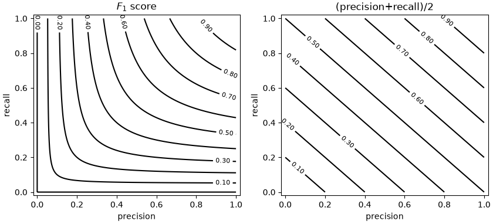
Classification, evaluation measures and KNN
Classification models are another broad class of predictive models. Following the Machine Learning terminology, it is common to talk about classification or regression “tasks”. These are the two main classes of tasks belonging to the broader class of supervised learning.
Task Definition
Recall that a predictive model is a function defined as follows:
h : \mathcal{X} \to \mathcal{Y}
If in the case of regression \mathcal{X}=\Re^n and \mathcal{Y}=\Re^m, in the case of classification, the output targets are discrete values which are generally referred to as “classes”. Without loss of generality, if there are M classes, then we define \mathcal{Y}=\{1,\ldots,M\}. If the inputs are numerical vectors (it does not have to always be this way, but we can usually employ a representation function to map the input to a numerical vector), a classification model can be defined as:
h : \Re^n \to \{0,\ldots,M-1\}
Also in this case, we will assume to have a set of data to train and evaluate our model
\text{D}=\{(x_i,y_i)\}_{i=1}^N
Note that in this case x_i\in \Re^n and y_i \in \{0,\ldots,M-1\}. Here, the values y_i are generally called “labels”, while the values \hat y = h(x) predicted using the classifier h are called predicted labels.
We can find the optimal model h by minimizing the empirical risk. A possible loss function is the following one:
L(\hat y, y) = \begin{cases}1 &\text{ if }& \hat y \neq y \\ 0 &\text{ if }& \hat y=y \end{cases}
Hence, the empirical risk will be the fraction of incorrect predictions:
R_{emp}(h) = \frac{1}{N} \sum_{i=1}^N L(\hat y_i, y_i) = \frac{\text{number of incorrect predictions}}{N}
The empirical risk computed as defined above is also known as error rate. It is a number comprised between 0 and 1 which can also be interpreted as a percentage.
The classifier can be learned by minimizing the empirical risk:
\hat h = \underset{h \in \mathcal{H}}{\mathrm{arg\ min}}\ R_{emp}(h)
Examples
Classifiers support decision making any time that observations need to be categorized in one of a predefined set of classes. Examples of such problems are:
Detecting spam emails (spam vs legitimate email classification).
Classifying social media posts as being about politics or something else (politics vs non-politics classification).
Recognizing the object depicted in an image out of 1000 different objects (object recognition).
For example, we can define spam detection as follows:
Task: given an e-mail, classify it as spam or non-spam.
Input example \mathbf{e}: the text of the e-mail. This can be a sequence of characters of arbitrary length. We can use some representation function to map an email \mathbf{e} to a vector of real numbers \mathbf{x} \in \Re^n. We also assume that a training set pairing the vectors \mathbf{x} with labels y \in \{ 0,1\} is available.
Classifier: a function h:\Re^n \rightarrow \{ 0,1\}.
Output: a predicted label \widehat{y} \in \{ 0,1\} indicating if the e-mail is legitimate or spam. Here we have a binary classification task, hence M = 2.
Evaluation Measures
As with the case of regression, we need to define evaluation measures. These will be useful to guide training (e.g., modify the parameters in order to improve the performance of the algorithm on the training set), tune hyper-parameters and to finally assess that the algorithm works on unseen data (the test set).
As in the case of regression, we will consider the set of ground truth test labels:
Y_{TE} = \left\{ y^{(i)}|\left( \mathbf{x}^{(i)},y^{(i)} \right) \in TE \right\}_{i}
and the set of predicted test labels :
{\widehat{Y}}_{TE} = \left\{ h\left( \mathbf{x}^{(i)} \right)|\left( \mathbf{x}^{(i)},y^{(i)} \right) \in TE \right\}_{i}
which will be used as inputs of our performance measures.
Accuracy
Accuracy is a very common performance measure. We define accuracy as the percentage of test examples for which our algorithm has predicted the correct label:
Accuracy\left( Y_{TE},{\widehat{Y}}_{TE} \right) = \frac{\left| \left\{ y^{(i)} : y^{(i)} = {\widehat{y}}^{(i)} \right\} \right|}{|Y_{TE}|}
For instance, if the test set contains 100 examples and for 70 of them we have predicted the correct label, then we will have:
Accuracy\left( Y_{TE},{\widehat{Y}}_{TE} \right) = \frac{70}{100} = 0.7
Note that accuracy is always a number comprised between 0 and 1. We can see the accuracy as a percentage. For instance, in the example above we could say that we have an accuracy of 70\%.
Error Rate
The error rate is closely associated to accuracy and defined as:
ErrorRate\left( Y_{TE},{\widehat{Y}}_{TE} \right) = \frac{\left| \left\{ y^{(i)} : y^{(i)} \neq {\widehat{y}}^{(i)} \right\} \right|}{|Y_{TE}|} = 1- Accuracy\left( Y_{TE},{\widehat{Y}}_{TE} \right)
Example - Imbalanced Dataset
To see the limits of accuracy, let us consider a dataset containing 10000 elements of two classes distributed as follows:
500 data points from class 0;
9500 data points from class 1.
Let us now consider a naïve classifier which always predicts class 1:
f\left( \mathbf{x} \right) = 1
Intuitively, we see that this classifier is not a good one, as it discards its input and just predicts the most frequent class. However, it can be easily seen that its accuracy is 0.95.
Error Types
The main limitation of the accuracy is that it counts the number of mistakes made by the algorithm, but it does not consider which types of mistakes it makes. In general, on each example, we can make two kinds of mistakes:
Type 1: we classify an example as belonging to the considered class, but it does not. These kinds of misclassifications are often called False Positives (FP).
Type 2: we classify the example as not belonging to the considered class, but it does belong to it. These kinds of misclassifications are often called False Negatives (FN).
We can also have two kinds of correct predictions:
True Positives (TP): these are elements from the considered class which have been classified as actually belonging to that class.
True Negatives (TN): these are elements which are not from the considered class and have been classified as actually not belonging to that class.
Confusion Matrix
To have a more complete view of how our classifier is performing, we can put these numbers in a table which we will call a confusion matrix:
In the matrix, the rows indicate the true labels, whereas the columns indicate the predicted labels. A good confusion matrix has large numbers in the main diagonal (TP and TN) and low numbers in the rest of the matrix (where the errors are).
The accuracy can be recovered from the confusion matrix as follows:
Accuracy = \frac{TP + TN}{TP + FN + FP + TN}
which consists in summing the numbers on the diagonal and dividing by the sum of all numbers. We can see the computation of the accuracy from the confusion matrix graphically as follows:
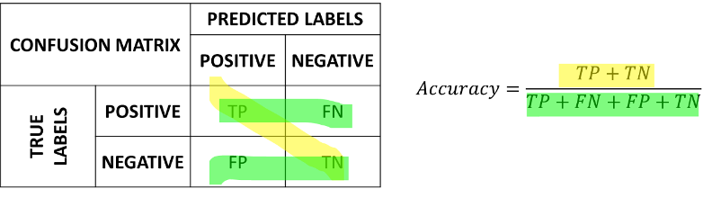
Example 1 – Spam Detector
Let us consider a spam detector which correctly detects 40 out of 50 spam emails, while it only recognizes 30 out of 50 legitimate emails. The confusion matrix associated to this classifier will be as follows:
Its accuracy will be:
Accuracy = \frac{40 + 30}{40 + 10 + 20 + 30} = \frac{70}{100} = 0.7
Example 2 – Imbalanced Dataset
Let us now consider the example of our imbalanced dataset with 9500 data points of class 1 and 500 data points of class 0. The confusion matrix of the naïve classifier f\left( \mathbf{x} \right) = 1 will be:
If we compute the accuracy of this classifier, we will obtain a good performance:
Accuracy = \frac{9500}{9500 + 500} = 0.95
However, looking at the confusion matrix, it is clear that something is wrong, and our classifier is not working well.
Precision and Recall
The confusion matrix allows to understand if there is an issue with the classifier in the case of imbalanced data. However, it is still convenient to have scalar measures which can tell us something about how the classifier is doing. In practice, it is common to define two complementary measures: precision and recall.
Precision measures how many of the examples which have been classified as positives were actually positives and is defined as follows:
Precision = \frac{TP}{TP + FP}
Recall measures how many of the examples which are positives, have been correctly classified as positives and is defined as follows:
Recall = \frac{TP}{TP + FN}
We can see graphically the computation of precision and recall as follows:
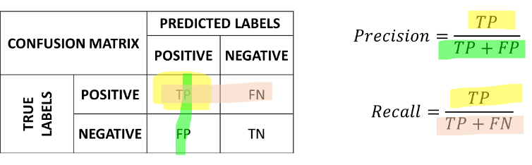
High Precision vs High Recall
These values capture different properties of the classifier. Depending on the application, we may want to have a higher precision or a higher recall. For example:
Consider a spam detector: we may want to have a very high precision, even at the cost of a low recall. Indeed, we want to make sure that if we classify an e-mail as spam (and hence we filter it out), it is actually spam (hence a high precision). This is acceptable even if sometimes we let a spam email get through the filter (hence a low recall).
Consider a medical pre-screening test which is used to assess if a patient is likely to have a given pathology. The test is cheap (e.g., a blood test) and can be made on a large sample of patients. If the test is positive, we then perform a more expensive but accurate test. In this case, we want to have a high recall. Indeed, if a patient has the pathology, we want to detect it and send the patient for the second, more accurate test (hence a high precision). This is acceptable even if sometimes we have false positives (hence a low precision). Indeed, if we wrongly detect a pathology, the second test will give the correct result.
Precision and recall can often have contrasting values (e.g., we can obtain a high precision but a low recall and vice versa), hence it is generally necessary to look at both numbers together.
Example – Spam Detector
Let us consider again the spam example, with the classifier obtaining this confusion matrix:
From the confusion matrix, we see that:
TP=40.
FN=10.
FP=20.
TN=30.
We can compute the following precision and recall values:
Precision = \frac{TP}{TP+FP} = \frac{40}{40 + 20} = 0.67;
Recall = \frac{TP}{TP+FN} = \frac{40}{40 + 10} = 0.8.
Like the accuracy, precision and recall are telling us that the classifier is not perfect, and they disagree about how. Recall is the higher of the two: most spam e-mails are caught. Precision is the lower one: one in three of the e-mails we filter out is legitimate. For a spam filter this is the wrong way round. Filtering a legitimate e-mail is the expensive error here, so we would want a very high precision (if we flag an e-mail as spam, it had better be spam) even at the cost of a lower recall — which is exactly what this classifier fails to deliver. Reading the two numbers in the wrong order would have hidden that.
F_{1} Score
We have seen that precision and recall describe different aspects of the classifier and hence it is often a good idea to look at them jointly. However, it is often convenient to have a single number which classifies both numbers.
The F_{1} score allows to do exactly this, by computing the harmonic mean of precision and recall:
F_{1} = 2 \cdot \frac{precision \cdot recall}{precision + recall}
We can note that, in order to obtain a large F_{1} score, we need to obtain both a large precision and a large recall. This is a property of the harmonic mean, as it is illustrated in the following example which compares the arithmetic mean (precision/2+recall/2) to the harmonic mean (the F_{1} score):
The example above shows the isocurves obtained by considering given precision and recall values. As can be noted, to obtain a large F_{1} score, we need to have both a large precision and a large recall.
Example - Spam Detector
Let us consider again the spam example, with the classifier obtaining this confusion function:
Starting from the precision and recall values previously computed:
Precision = \frac{TP}{TP+FP} = \frac{40}{40 + 20} = 0.67;
Recall = \frac{TP}{TP+FN} = \frac{40}{40 + 10} = 0.8.
we can compute the F_{1} score as:
F_{1} = 2\frac{precision \cdot recall}{precision + recall} = 2 \cdot \frac{0.67 \cdot 0.8}{0.67 + 0.8} = 0.72
Note that, since the dataset is balanced, this value is not very different from the accuracy of 0.7.
Confusion Matrix for Multi-Class Classification
We have seen the confusion matrix in the case of binary classification. However, it should be noted that the confusion matrix generalizes to the case in which there are M classes. In that case, the confusion matrix is M \times M and its general element C_{ij} indicates the number of elements belonging to class i, which have been classified as belonging to class j. An example of a confusion matrix in the case of three classes is the following:
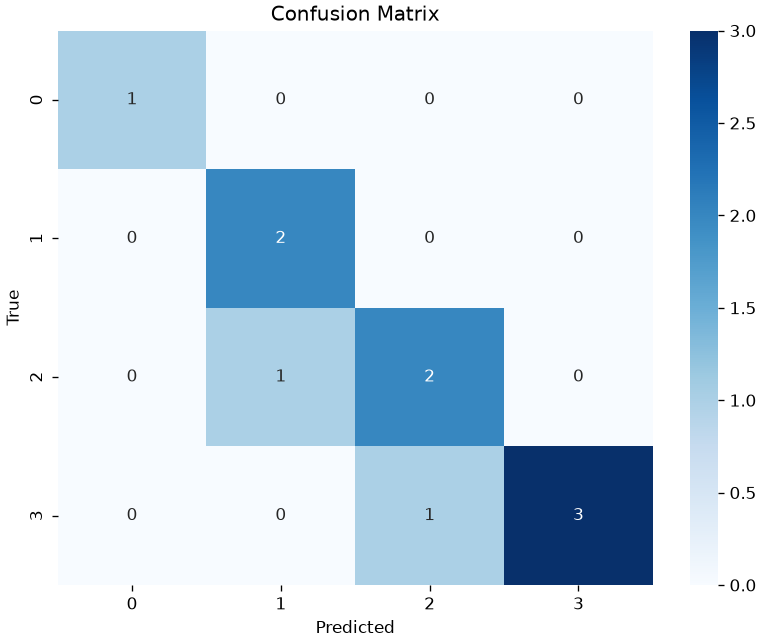
Similar to the binary case, we expect to have large numbers on the diagonal and small number in all other cells. The concepts of precision, recall and F_{1} score generalize considering a binary classification task for each of the classes (i.e., distinguishing each class from all the others). Hence, in the example shown above, we would have three F_{1} scores:
[1. 0.8 0.66666667 0.85714286]ROC (Receiver Operating Characteristic) Curve and Area Under the Curve (AUC) Measures
As previously mentioned, some binary classifiers output a probability or a confidence score and allow to obtain class predictions by thresholding on such probabilities or scores. When the confidence value is not a probability, it might not be easy to interpret it and find a good threshold. Even when the classifier outputs a probability, the optimal threshold might not be 0.5. For instance, we may want to build an intrusion detection system which is more or less sensitive to potential intrusions.
The ROC curve allows to evaluate the performance of a classifier independently from the threshold. Specifically, let
c(\mathbf{x})
be a function predicting a confidence value from an input vector \mathbf{x}. For instance, in the case of the logistic regressor:
c(\mathbf{x}) = \sigma(\beta_0 + \beta_1 x_1 + \ldots + \beta_n x_n)
We will define our classification function as:
h_\theta(\mathbf{x}) = [\sigma(\beta_0 + \beta_1 x_1 + \ldots + \beta_n x_n) \geq \theta]
where [\cdot] denotes the Iverson brackets and \theta \in \Re is a real-valued threshold.
Depending on the chosen value of the threshold, we will have a given number of true positives, true negatives, false positives and false negatives:
TP_\theta TN_\theta FP_\theta FN_\theta
We will define the true positive rate (TPR) and false positive rate (FPR) as follows:
TPR_\theta = \frac{TP_\theta}{TP_\theta+FN_\theta}
FPR_\theta = \frac{FP_\theta}{FP_\theta+TN_\theta}
In practice:
- The TPR is the fraction of true positives over all positive elements - this is the same as the recall;
- The FPR on the contrary is the fraction of false positive predictions over all negative elements.
We note that:
- If we pick low threshold values, both the TPR and the FPR will be equal to 1. Indeed, with a small enough threshold, all elements will be classified as positives and there will be no predicted negatives, so the TPR will be equal to 1. At the same time, the FPR will be 1 because we will have no true negatives;
- If we pick high threshold values, both the TPR and the TNR will be zero. Indeed, with a large enough threshold, all elements will be classified as negatives and there will be no positive predictions, so the TPR will be zero. At the same time, since all elements will be classified as negatives and there will be no false positive predictions, the FPR will be equal to 0;
An ROC curve is obtained by picking a threshold value \theta and plotting a 2D point (TPR_\theta, TNR_\theta). By varying the threshold \theta, we obtain a curve which tell us what is the trade-off between TPR and TNR regardless of the threshold.
The following plot show an example of an ROC curve for a binary classifier on the breast cancer dataset:
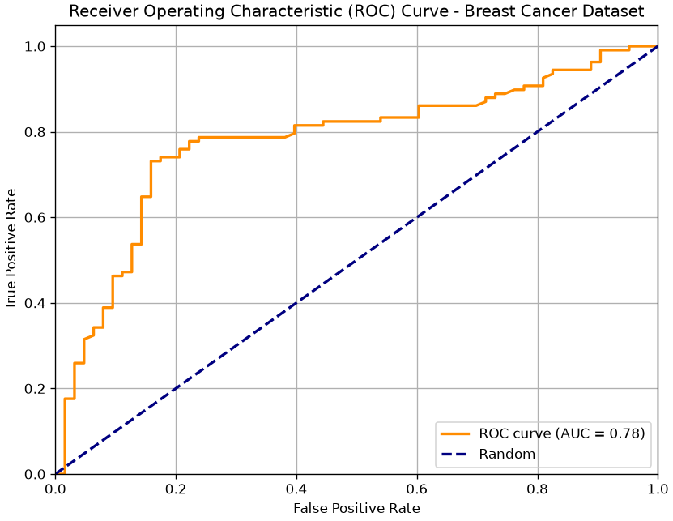
We know that the two points (0,0) and (1,1) belong to the curve. Ideally, starting from a low threshold (with TPR=FPR=1), as we move the threshold up enough, we would expect the FPR to decrease (we are discarding false positives), while the TPR is still high (we are not discarding true positives). Hence the ideal curve should be a rectangular curve touching point (0,1). In practice, we can measure the area under the ROC curve to see how well the classifier is doing. This value is generally referred to as “AUC”.
The dashed line indicates the performance of a random predictor. Note the the area under the curve identified by this dashed line will be equal to 0.5. Any curve which is systematically below this line indicates a classifier which is doing thresholding in the wrong way (i.e. we should invert the sign of the thresholding). For instance, this is the curve of the same classifier when we invert the sign of thresholding:
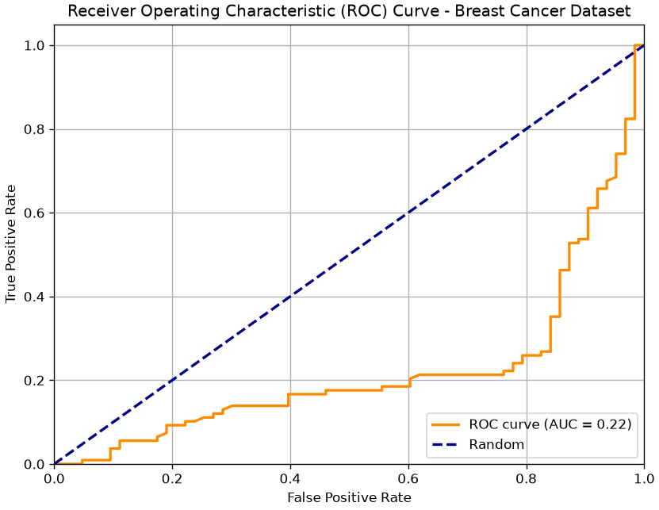
We can use ROC curves to compare two different classifiers as shown in the following:
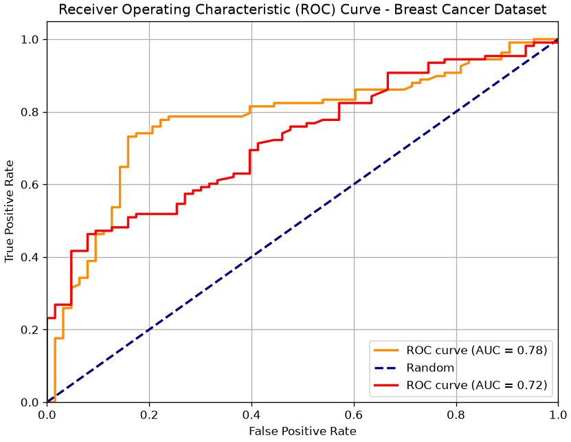
A Simple Classifier: The Threshold Model
Let’s start with the simplest possible classifier. We’ll use a dataset of heights and weights to predict a person’s sex (Male or Female).
import pandas as pd
import numpy as np
import seaborn as sns
import matplotlib.pyplot as plt
from sklearn.metrics import confusion_matrix, roc_curve, auc, classification_report
# Load the dataset
data = pd.read_csv(DATA + "height_weight.csv")
# Let's look at the height distributions
sns.histplot(data=data, x='height', hue='sex', kde=True, bins=30)
plt.title('Height Distribution by Sex')
plt.show()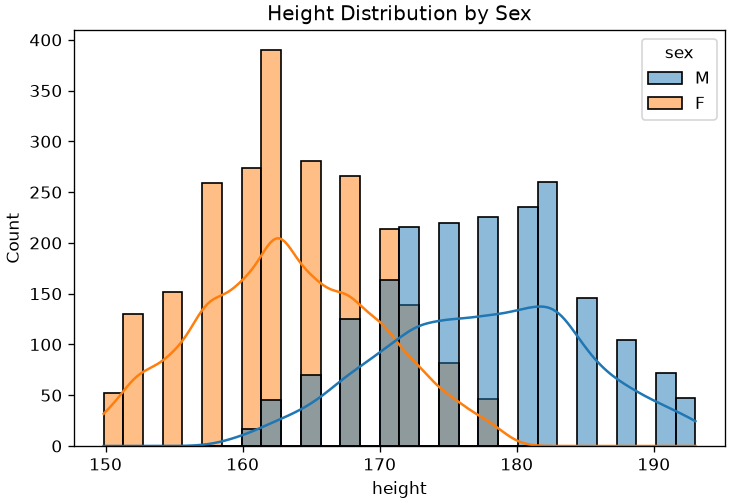
The plot clearly shows that, on average, males are taller than females. This suggests we could build a simple classifier:
“If a person’s height is above a certain threshold, we predict ‘Male’.”
Let’s arbitrarily pick a threshold of 170 cm.
# Our "model" is just a simple threshold
threshold = 170
# 1. Get the predicted labels (True for 'Male', False for 'Female')
# This is our model's prediction, ŷ
male_pred = (data['height'] >= threshold)
# 2. Get the "Ground Truth" labels
# This is the true y
male_gt = (data['sex'] == 'M')
# Now, let's see how well our simple "model" did.
# We will build a Confusion Matrix.
cm = confusion_matrix(male_gt, male_pred)
# Let's visualize it
sns.heatmap(cm, annot=True, fmt='d', cmap='Blues',
xticklabels=['Predicted: Female', 'Predicted: Male'],
yticklabels=['True: Female', 'True: Male'])
plt.title(f'Confusion Matrix (Threshold = {threshold} cm)')
plt.show()
print(classification_report(male_gt, male_pred))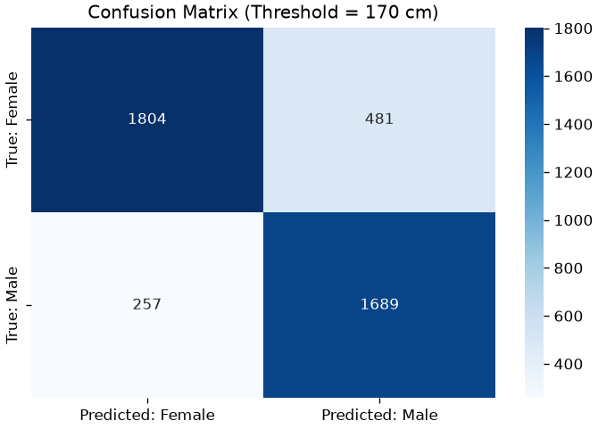
precision recall f1-score support
False 0.88 0.79 0.83 2285
True 0.78 0.87 0.82 1946
accuracy 0.83 4231
macro avg 0.83 0.83 0.83 4231
weighted avg 0.83 0.83 0.83 4231
Our model has only a single threshold parameter. As we can see, changing it affects performance. For instance, setting the threshold ot 180cm gives this confusion matrix:
# Our "model" is just a simple threshold
threshold = 180
# 1. Get the predicted labels (True for 'Male', False for 'Female')
# This is our model's prediction, ŷ
male_pred = (data['height'] >= threshold)
# 2. Get the "Ground Truth" labels
# This is the true y
male_gt = (data['sex'] == 'M')
# Now, let's see how well our simple "model" did.
# We will build a Confusion Matrix.
cm = confusion_matrix(male_gt, male_pred)
# Let's visualize it
sns.heatmap(cm, annot=True, fmt='d', cmap='Blues',
xticklabels=['Predicted: Female', 'Predicted: Male'],
yticklabels=['True: Female', 'True: Male'])
plt.title(f'Confusion Matrix (Threshold = {threshold} cm)')
plt.show()
print(classification_report(male_gt, male_pred))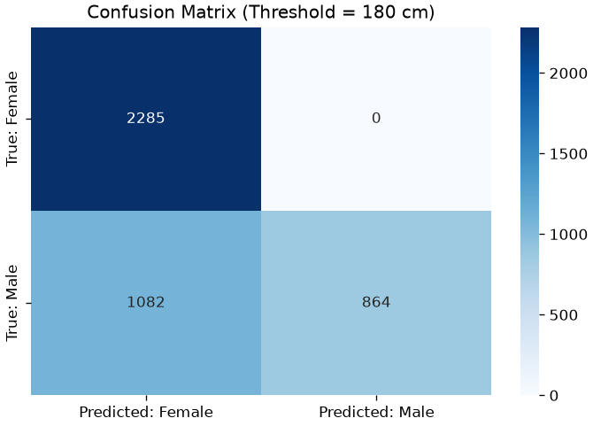
precision recall f1-score support
False 0.68 1.00 0.81 2285
True 1.00 0.44 0.61 1946
accuracy 0.74 4231
macro avg 0.84 0.72 0.71 4231
weighted avg 0.83 0.74 0.72 4231
The model is “worse” (more elements off diagonal), but it also found many more females. In practice, moving the threshold changes the balance between true positives and false positives. In practice, we can compute the ROC curve to visualize this trade-off:
# The "ground truth" labels (1 for Male, 0 for Female)
male_gt = (data['sex'] == 'M')
# The "score" our classifier uses. In this case, it's just the height itself.
# A higher score = more likely to be 'Male'.
scores = data['height']
# 1. Calculate the ROC curve
fpr, tpr, thresholds = roc_curve(male_gt, scores)
# 2. Calculate the Area Under the Curve (AUC)
roc_auc = auc(fpr, tpr)
# 3. Plot
plt.figure(figsize=(8, 6))
plt.plot(fpr, tpr, color='darkorange', lw=2, label=f'ROC curve (AUC = {roc_auc:.2f})')
plt.plot([0, 1], [0, 1], color='navy', lw=2, linestyle='--', label='Random Guess') # The "worst" curve
plt.plot([0, 0, 1], [0, 1, 1], color='green', lw=1, linestyle=':', label='Ideal Curve') # The "best" curve
plt.xlim([0.0, 1.0])
plt.ylim([0.0, 1.05])
plt.xlabel('False Positive Rate (FPR)')
plt.ylabel('True Positive Rate (TPR)')
plt.title('ROC Curve for Height-Based Classifier')
plt.legend(loc='lower right')
plt.grid(True, linestyle='--', alpha=0.5)
plt.show()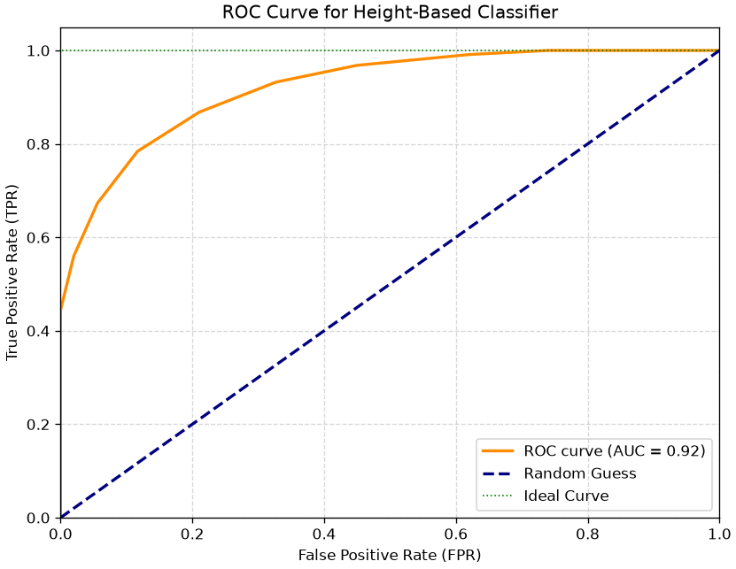
Interpreting the ROC Curve & AUC
- The Curve (Orange): This shows our classifier. Each point on this line is a different threshold.
- The “Random Guess” Line (Blue Dashed): This is the performance of a coin flip (AUC = 0.5). Any model below this line is useless.
- The “Ideal” Curve (Green Dotted): A perfect classifier would go straight to the top-left corner (100% TPR, 0% FPR).
The Area Under the Curve (AUC) summarizes this entire plot into a single number from 0 to 1.
- AUC = 1.0: A perfect classifier.
- AUC = 0.5: A useless (random) classifier.
- AUC < 0.5: A classifier that is actively wrong (it’s better if you reverse its predictions).
Our model, based only on height, has an AUC of 0.92, which is extremely good!
We can even use this method to compare classifiers. For example, is height or weight a better predictor of sex?
# Calculate ROC for both features
fpr_h, tpr_h, _ = roc_curve(male_gt, data['height'])
auc_h = auc(fpr_h, tpr_h)
fpr_w, tpr_w, _ = roc_curve(male_gt, data['weight'])
auc_w = auc(fpr_w, tpr_w)
# Plot both
plt.figure(figsize=(8, 6))
plt.plot(fpr_h, tpr_h, lw=2, label=f'Height (AUC = {auc_h:.2f})')
plt.plot(fpr_w, tpr_w, lw=2, label=f'Weight (AUC = {auc_w:.2f})')
plt.plot([0, 1], [0, 1], 'k--', label='Random Guess')
plt.xlabel('False Positive Rate (FPR)')
plt.ylabel('True Positive Rate (TPR)')
plt.title('Classifier Comparison: Height vs. Weight')
plt.legend(loc='lower right')
plt.grid(True, linestyle='--', alpha=0.5)
plt.show()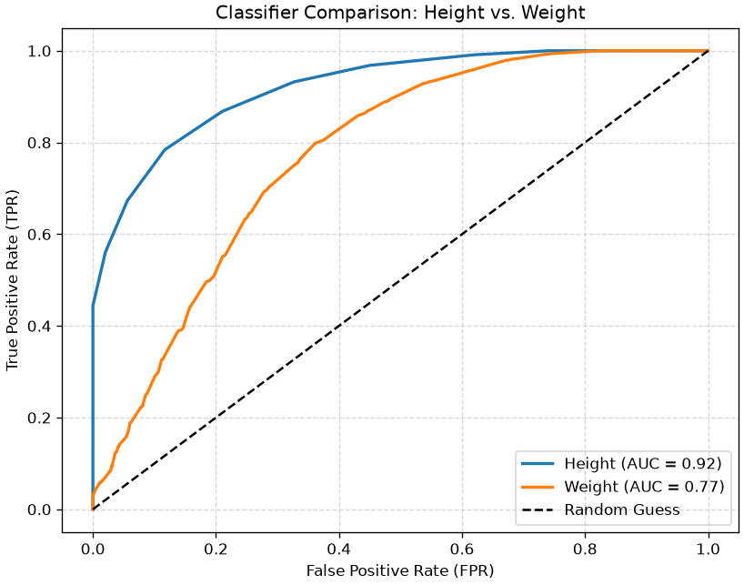
The plot clearly shows that height (AUC = 0.92) is a significantly better predictor than weight (AUC = 0.88).
This entire analysis (Confusion Matrix, TPR, FPR, ROC, AUC) is our toolkit for evaluating any classifier.
How to Choose an Optimal Threshold
The ROC curve shows us all possible tradeoffs, but in the end, we must choose one single threshold for our model.
The “best” threshold depends on your goal:
- High-Sensitivity (e.g., medical screening): You might choose a threshold that gives a high TPR (e.g., 0.95), even if it means a higher FPR.
- High-Specificity (e.g., spam filter): You might choose a threshold that gives a very low FPR (e.g., 0.01), even if you miss some positives.
If you don’t have a specific preference and want a “balanced” model, a common method is to find the threshold that is “closest” to the top-left corner (0 FPR, 1 TPR).
A simple way to do this is to find the threshold that maximizes the sum of TPR and Specificity (1 - FPR). This is also known as Youden’s J statistic.
J = TPR + (1 - FPR)
Let’s find the threshold for our height classifier that maximizes this balanced score.
# We already have fpr_h, tpr_h, and thresholds_h from the 'height' model
# 1. Calculate the balanced score (Youden's J) for each threshold
balanced_score = tpr_h + (1 - fpr_h)
# 2. Find the index of the threshold that gives the maximum score
best_index = np.argmax(balanced_score)
best_threshold = thresholds[best_index]
best_tpr = tpr_h[best_index]
best_fpr = fpr_h[best_index]
# 3. Plot the score vs. the thresholds
plt.figure(figsize=(10, 6))
# We slice [1:] to avoid a plotting artifact from the 'inf' threshold
plt.plot(thresholds[1:], balanced_score[1:])
plt.axvline(best_threshold, color='red', linestyle='--',
label=f'Optimal Threshold = {best_threshold:.2f} cm')
plt.title('Finding the Optimal Threshold')
plt.xlabel('Threshold (cm)')
plt.ylabel('Balanced Score (TPR + 1-FPR)')
plt.legend()
plt.grid(True, linestyle='--', alpha=0.5)
plt.show()
print(f"Optimal threshold was found at {best_threshold:.2f} cm")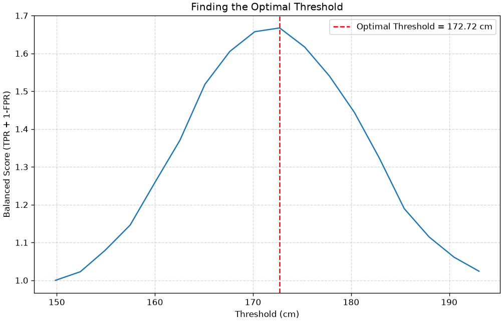
Optimal threshold was found at 172.72 cmFinal Evaluation at the Optimal Threshold
The plot shows us exactly how the performance changes. The peak of the curve (our optimal threshold) is at 169.57 cm.
Let’s see the final TPR and FPR if we use this single, balanced threshold for our classifier.
# We already found the best TPR/FPR from the argmax
print(f"--- Final Model at Optimal Threshold ({best_threshold:.2f} cm) ---")
print(f"True Positive Rate (TPR): {best_tpr:.2f} (We find {best_tpr*100:.0f}% of all Males)")
print(f"False Positive Rate (FPR): {best_fpr:.2f} (We mislabel only {best_fpr*100:.0f}% of Females)")
print("-" * 25)
# You can also re-calculate it manually to double-check
print("\nVerifying with confusion_matrix:")
male_pred_optimal = (data['height'] >= best_threshold)
male_gt = (data['sex'] == 'M')
tn, fp, fn, tp = confusion_matrix(male_gt, male_pred_optimal).ravel()
tpr_check = tp / (tp + fn)
fpr_check = fp / (fp + tn)
print(f"TPR Check: {tpr_check:.2f}")
print(f"FPR Check: {fpr_check:.2f}")
print("\nClassification Report at Optimal Threshold:")
print(classification_report(male_gt, male_pred_optimal))--- Final Model at Optimal Threshold (172.72 cm) ---
True Positive Rate (TPR): 0.78 (We find 78% of all Males)
False Positive Rate (FPR): 0.12 (We mislabel only 12% of Females)
-------------------------
Verifying with confusion_matrix:
TPR Check: 0.78
FPR Check: 0.12
Classification Report at Optimal Threshold:
precision recall f1-score support
False 0.83 0.88 0.85 2285
True 0.85 0.78 0.82 1946
accuracy 0.84 4231
macro avg 0.84 0.83 0.84 4231
weighted avg 0.84 0.84 0.84 4231
This method gives us a principled, balanced way to select a single threshold from our ROC curve. We find that a threshold of ~172.2 cm gives us a 78% TPR while only mislabeling 12% of females, which is a strong, balanced result.
K-Nearest Neighbor Classification
Threshold-based classification is very limited as it works when we only have one feature. We will now see the K-Nearest Neighbor classifier, an intuitive, non-parametric algorithm based on the concept of similarity between data points. We will first start by introducing the simple 1-NN algorithm (or nearest neighbor).
The Nearest Neighbor (or 1-NN) Classification Algorithm
Given an observation \mathbf{x}, the basic principle of Nearest Neighbor classification is to look at the nearest example in the training set and assign the same class. The idea is that nearby elements in the representation space will likely be similar. Consider the following example in which each data point is an email:
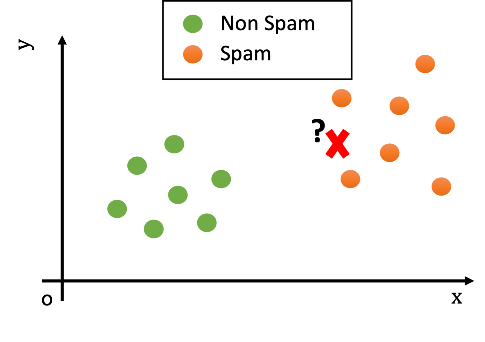
We could think of the x and y features as characteristics useful to determine if an e-mail is spam. For instance x may count the number of orthographic errors, while y may count the number of occurrences of given keywords such as “buy” or “viagra”.
Looking at the plot above, what would be the class of the new example (the red cross)?
We notice that, while the test example is not exactly equal to any training example, it is still reasonably similar to some training examples (i.e., there are points nearby in the Euclidean space).
Since the training and test sets have been collected in similar ways (e.g., both contain spam and legitimate e-mails), we can hypothesize that the test example will be of the same class of similar examples belonging to the training set.
For instance, if two documents have similar word frequencies, they are probably of the same class (e.g., if both contain the words “viagra” and “sales” many times, they probably belong to “spam” class).
We can measure how “similar” two examples \mathbf{x} and \mathbf{x}’ are using a suitable distance function d:
d(\mathbf{x},\mathbf{x}^{\mathbf{'}})
We expect similar examples to have a small distance. A very common choice for d is the Euclidean distance:
d\left( \mathbf{x,}\mathbf{x}^{\mathbf{'}} \right) = \left\| \mathbf{x -}\mathbf{x}^{\mathbf{'}} \right\|_{2} = \sqrt{\sum_{i = 1}^{N}\left( x_{i} - x_{i}^{'} \right)^{2}}
We can hence define a classifier which leverages our intuition assigning to a test example \mathbf{x}^{\mathbf{'}}the class of the closest example in the training set:
h\left( \mathbf{x}^{\mathbf{'}} \right) = \arg_{y}{\min{\{ d\left( \mathbf{x}^{\mathbf{'}}\mathbf{,\ x} \right)|\left( \mathbf{x},y \right) \in TR\}}}
This algorithm is referred to as the nearest neighbor algorithm (or 1-NN as we will see in its generalization in a moment). In practice, given a test example \mathbf{x}^{\mathbf{'}}, the nearest neighbor algorithm works in two steps:
Find the element \overline{\mathbf{x}} of the training set with the smallest distance with \mathbf{x'} (i.e., such that d(\overline{\mathbf{x}},\mathbf{x}^{\mathbf{'}}) is minimum). The element \overline{\mathbf{x}} is called the nearest neighbor of \mathbf{x}^{'}.
Return the ground truth label associated to \overline{\mathbf{x}}, i.e., y\ |\ \left( \overline{\mathbf{x}},y \right) \in TR.
In the example above, the test observation will be assigned the “spam” class, as shown in the following figure:
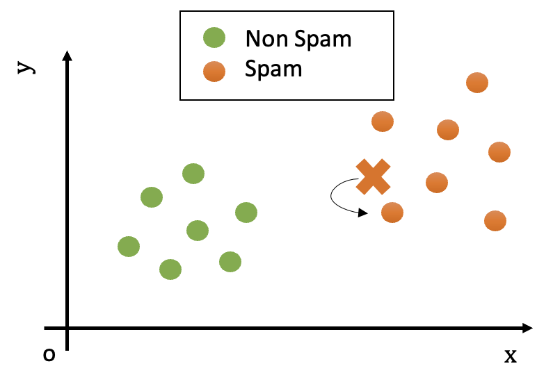
The K-Nearest Neighbour Classification Algorithm
The Nearest Neighbor (or 1-NN) algorithm assumes that data points of the same class are close to each other in the representation space. This can be reasonably true when the representation space is ideal for the classification task and the data is clean and simple enough. For instance, we expect similar documents to have similar word frequencies.
However, it is often common to have ‘outliers’ in the training data, i.e., data points which do not closely follow the distribution of the other data points. This can be due to different factors:
The data may not be clean: maybe an email has been wrongly classified as “spam” when it’s actually not spam;
The data representation may not be ideal: there could be legitimate email in which the word “viagra” is used and there are many orthographical errors. Think of a legitimate email forwarding a spam email. Our simple representation does not account for that, which leads to outliers.
Let us consider as an outlier a legitimate e-mail containing the word ‘viagra’. This example can be seen graphically as follows:
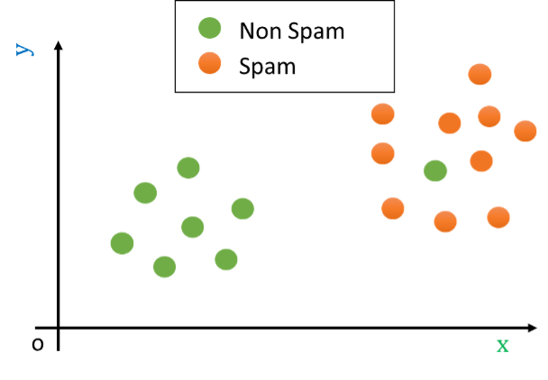
Let us now assume that we are presented with a test example which is shown as a red cross in the following figure:
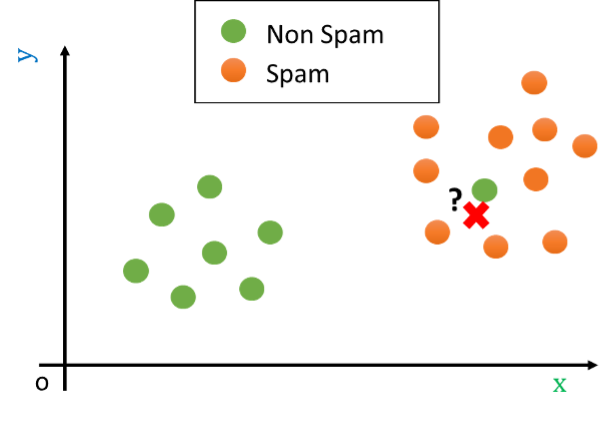
In the example above, the nearest neighbor algorithm would classify the test example (the red cross) as “non spam” since the closest point is the green outlier, while it is clear that the example is most probably a “spam” e-mail. Indeed, while the closest example is “non spam”, all other examples nearby belong to the “spam” class.
Reasonably, in cases like this, we should not look just at the closest point in space, but instead, we should look at a neighborhood of the data point. Consider the following example:
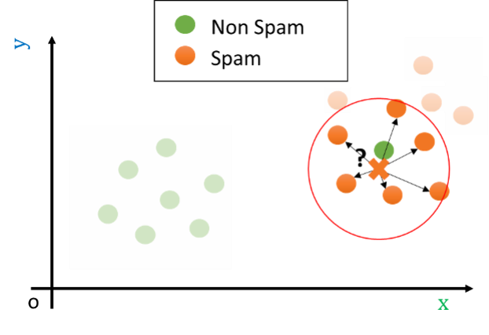
If we look at a sufficiently large neighborhood, we find that most of the points in the neighborhood are actually spam! Hence, it is wiser to classify the data point as belonging to the spam class, rather than to the non-spam one.
In practice, setting an appropriate radius for the neighborhood is not easy. For instance, if the space is not uniformly dense (and usually it is not – as in the example above!), a given radius could lead to neighborhoods containing different numbers of elements. Indeed, in some cases, they may even include just zero elements. Hence, rather than considering a neighborhood of a given radius, we consider neighborhoods of the point containing at most \mathbf{K} elements, where \mathbf{K} is a hyper-parameter of the algorithm.
Similarly to what we have defined in the case of density estimation, given a point \mathbf{x'}, we will define the neighborhood of training points of size K centered at \mathbf{x'} as follows:
N_K(\mathbf{x'}) = N(\mathbf{x'},R_K(\mathbf{x'}))
where N(x,r) denotes a neighborhood centered at x and with radius r, and:
R_K(\mathbf{x'}) = \sup \{r : |N(\mathbf{x'},r) \setminus \{\mathbf{x'}\}| \leq K\}
Finally, we define the K-Nearest Neighbor Classification Algorithm (also called K-NN) as follows:
h\left( \mathbf{x'} \right) = mode\{ y|\left( \mathbf{x},y \right) \in N\left( \mathbf{x'};TR,\ K \right)\}
Where mode is the “statistical mode” function, which returns the most frequent element of a set.
\mathbf{K} is in practice an hyperparameter of the algorithm. It can be set to some arbitrary value or optimized using a validation set or cross-validation.
We should note that this definition generalizes the nearest neighbor algorithm defined before. Indeed, a 1-NN is exactly the nearest neighbor classifier seen above.
The Curse of Dimensionality
The K-Nearest Neighbors algorithm is simple, intuitive, and powerful. However, it suffers from a famous and critical problem known as the “Curse of Dimensionality.”
This “curse” refers to a set of problems that arise when your data has a very large number of features (or “dimensions”).
The core idea is: As dimensions increase, your data becomes incredibly sparse, and the concept of “distance” becomes meaningless.
The “Empty Space” Problem (2D vs. 3D)
Let’s visualize how the same number of data points become increasingly sparse as we add dimensions. We’ll generate 50 random data points and plot them in 1, 2, and 3 dimensions. Imagine these points are uniformly distributed within a unit hypercube (from 0 to 1 on each axis).
import numpy as np
import matplotlib.pyplot as plt
from mpl_toolkits.mplot3d import Axes3D # Required for 3D plots
n_points = 50 # Let's use 50 points for better visibility
plt.figure(figsize=(18, 6))
# --- 1 Dimension ---
ax1 = plt.subplot(1, 3, 1)
data_1d = np.random.rand(n_points, 1) # 50 points, 1 feature
y_1d = np.zeros(n_points) # For plotting on a line
ax1.scatter(data_1d, y_1d, s=50, alpha=0.7, color='blue')
ax1.set_title(f'1D Space with {n_points} Points', fontsize=14)
ax1.set_xlabel('Feature 1')
ax1.set_yticks([]) # Hide y-axis ticks for a line plot
ax1.set_xlim(-0.1, 1.1)
ax1.set_ylim(-0.1, 0.1)
ax1.grid(True, linestyle='--', alpha=0.6)
# --- 2 Dimensions ---
ax2 = plt.subplot(1, 3, 2)
data_2d = np.random.rand(n_points, 2) # 50 points, 2 features
ax2.scatter(data_2d[:, 0], data_2d[:, 1], s=50, alpha=0.7, color='green')
ax2.set_title(f'2D Space with {n_points} Points', fontsize=14)
ax2.set_xlabel('Feature 1')
ax2.set_ylabel('Feature 2')
ax2.set_xlim(-0.1, 1.1)
ax2.set_ylim(-0.1, 1.1)
ax2.grid(True, linestyle='--', alpha=0.6)
# --- 3 Dimensions ---
ax3 = plt.subplot(1, 3, 3, projection='3d')
data_3d = np.random.rand(n_points, 3) # 50 points, 3 features
ax3.scatter(data_3d[:, 0], data_3d[:, 1], data_3d[:, 2], s=50, alpha=0.7, color='red')
ax3.set_title(f'3D Space with {n_points} Points', fontsize=14)
ax3.set_xlabel('Feature 1')
ax3.set_ylabel('Feature 2')
ax3.set_zlabel('Feature 3')
ax3.set_xlim(-0.1, 1.1)
ax3.set_ylim(-0.1, 1.1)
ax3.set_zlim(-0.1, 1.1)
ax3.grid(True, linestyle='--', alpha=0.6)
plt.tight_layout()
plt.show()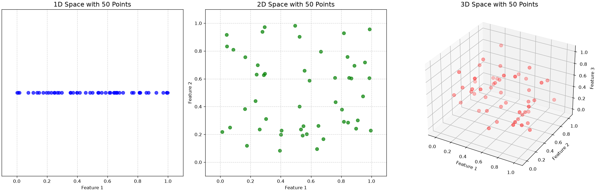
Interpretation of the Plots:
- 1D: The 50 points are quite crowded on the line. You can easily find very close neighbors.
- 2D: The same 50 points are now spread out over a square. The space feels much emptier, and points are farther apart.
- 3D: In a cube, the 50 points are truly sparse. It’s hard to even see individual points, and the space between them is vast.
Now, imagine doing this for dozens, hundreds, or even thousands of dimensions. The space becomes astronomically large, and your few data points are like individual dust particles lost in an empty galaxy.
The Impact on KNN
This creates two massive problems for KNN, which relies entirely on the idea of “nearness”:
- Sparsity: In high dimensions, your “nearest neighbor” might still be incredibly far away. Is it really “similar” to you if it’s so far? Its “vote” is probably not reliable.
- Distance Becomes Meaningless: This is the more critical point. In high-dimensional space, a strange mathematical property emerges: the distance to your nearest point and the distance to your farthest point become almost the same.
When all points are “equally far away” from each other, the concept of a “nearest neighbor” becomes random and meaningless. The algorithm’s foundation breaks down, and its predictions become unstable.
The plot below illustrates this:
import matplotlib.pyplot as plt
import numpy as np
from scipy.spatial.distance import pdist
# 1. Define our parameters
n_points = 100
# We will test a range of dimensions, from 2 up to 1000
dimensions_to_test = range(2, 5001, 100)
# Store the results
min_distances = []
max_distances = []
relative_spread = []
# 2. Run the simulation
for d in dimensions_to_test:
# Generate random points in a d-dimensional unit hypercube
points = np.random.rand(n_points, d)
# Calculate all pairwise distances
all_distances = pdist(points)
# Find the min and max
min_d = np.min(all_distances)
max_d = np.max(all_distances)
# Store the results
min_distances.append(min_d)
max_distances.append(max_d)
# This is the key metric: how "different" is max from min, relative to max?
relative_spread.append((max_d - min_d) / max_d)
# --- 3. Plot the Results ---
fig, (ax1, ax2) = plt.subplots(1, 2, figsize=(16, 6))
fig.suptitle('Illustration of the Curse of Dimensionality', fontsize=16)
# Plot 1: The actual min and max distances
ax1.plot(dimensions_to_test, min_distances, 'b-', label='Minimum Distance')
ax1.plot(dimensions_to_test, max_distances, 'r-', label='Maximum Distance')
ax1.set_xlabel('Number of Dimensions (d)')
ax1.set_ylabel('Euclidean Distance')
ax1.set_title('Distance between 100 Random Points')
ax1.legend()
ax1.grid(True, linestyle='--', alpha=0.5)
# Plot 2: The relative spread
ax2.plot(dimensions_to_test, relative_spread, 'g-')
ax2.set_xlabel('Number of Dimensions (d)')
ax2.set_ylabel('Relative Spread: (Max - Min) / Max')
ax2.set_title('Collapse of "Neighborhood"')
ax2.grid(True, linestyle='--', alpha=0.5)
ax2.set_ylim(0, 1) # Force y-axis to be 0 to 1 (or 100%)
plt.tight_layout(rect=[0, 0.03, 1, 0.95])
plt.show()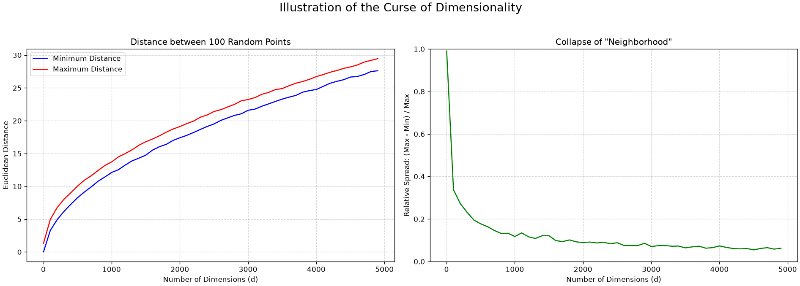
The plot on the left shows how both the minimum and maximum distance increase with the number of dimensions. The plot on the right computes the average relative spread between the maximum and minimum distance for each point. The realtive spread is computed as:
\text{Relative Spread} = \frac{\text{max} - \text{min}}{\text{max}}
The plot shows that relative spread collapses to almost zero in high dimensions.
Takeaways
- KNN works extremely well for low-dimensional data (e.g., our 2-feature or 4-feature Iris example).
- It is almost always a poor choice for high-dimensional data (like images, which can have 10,000+ features, or text data with 5,000+ features) unless you use dimensionality reduction first (like PCA, as we will see later).
A Deeper Look: KNN as a Discriminative Classifier
This is a good time to introduce a fundamental concept in classification. Classifiers are generally split into two main types: Generative and Discriminative.
Generative Classifiers
- What they do: A generative model learns the underlying probability distribution of each class. It builds a “story” for what each class looks like (e.g., “What’s the average and standard deviation of
sepal lengthfor asetosa?”). - The Question it Answers: “What does Class A look like?”
- How it Classifies: It uses this knowledge and Bayes’ theorem to calculate P(y|X)—the probability of a class y given a new X.
- Example: Naive Bayes is the classic generative model.
Discriminative Classifiers
- What they do: A discriminative model ignores the underlying distribution of each class. It doesn’t care what “Class A” looks like. It only cares about finding the decision boundary that separates Class A from Class B.
- The Question it Answers: “What is the difference between Class A and Class B?”
- How it Classifies: It directly learns the function h(x) or the boundary P(y|X).
- Example: K-Nearest Neighbors is a classic discriminative model.
The decision boundary plots we saw earlier are the perfect illustration of this. KNN is literally all about the boundary. It carves up the feature space into regions based on the training data, and it doesn’t spend any time modeling the probability distribution of the setosa class itself.
Logistic Regression, which we will see later, is another famous discriminative classifier.
KNN Example: The Fisher Iris Dataset
To understand K-Nearest Neighbors, we will use a classic, famous dataset: the Fisher Iris Dataset. This is the “hello, world” of machine learning classification.
Fisher’s Iris Dataset
- Origin: Introduced by the statistician and biologist Ronald Fisher in 1936.
- Goal: To classify Iris flowers into one of three species (the target variable) based on four physical measurements (the features).
- Data Structure:
- Target (Y): 3 classes (species)
- Iris setosa
- Iris versicolor
- Iris virginica
- Features (X): 4 continuous measurements
- Sepal Length (in cm)
- Sepal Width (in cm)
- Petal Length (in cm)
- Petal Width (in cm)
- Data Size: 150 total samples, perfectly balanced with 50 samples for each of the three species.
- Target (Y): 3 classes (species)
The figure below depicts the three categories of flowers:
The following one illustrates the features:
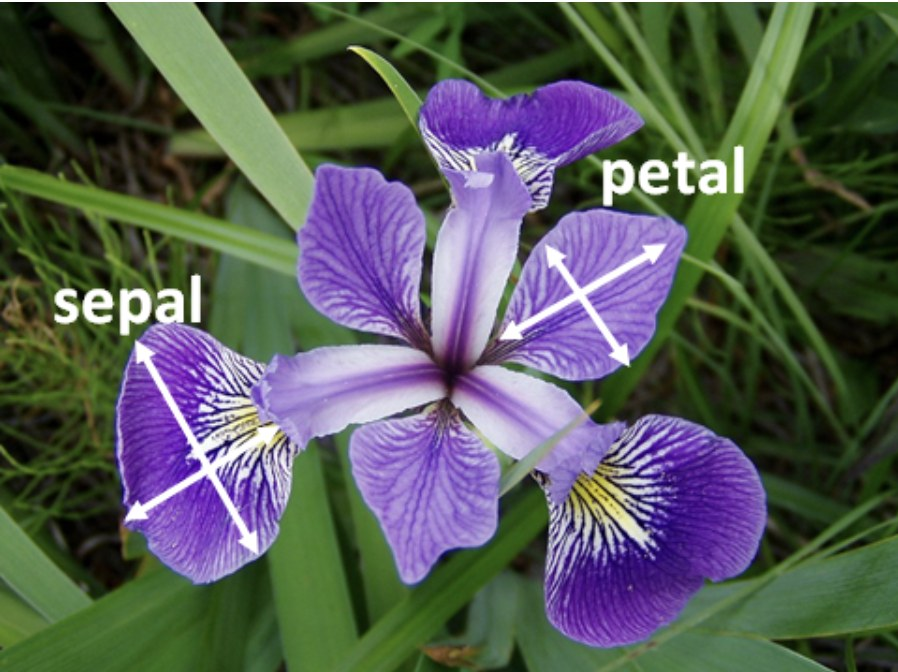
The Iris dataset is famous because it perfectly illustrates the main challenge of classification.
- One species, Iris setosa, is linearly separable from the other two (it’s very easy to classify).
- The other two species, Iris versicolor and Iris virginica, are not linearly separable. They overlap, meaning there is no simple, straight line that can perfectly separate them.
This overlap is what makes the problem interesting and is a perfect scenario to test a flexible, non-linear classifier like K-Nearest Neighbors (KNN). Our goal will be to train a KNN model that can learn the “boundaries” between these species based on their petal and sepal measurements.
Loading and Exploring the Data
First, we’ll load the dataset. It’s included directly in scikit-learn. We will load it and convert it into a pandas DataFrame to make it easier to work with.
import pandas as pd
import numpy as np
import seaborn as sns
import matplotlib.pyplot as plt
from sklearn.datasets import load_iris
# Load the dataset
iris = load_iris()
# Create a DataFrame
# We use iris.feature_names as the column headers
df = pd.DataFrame(data=iris.data, columns=iris.feature_names)
# Add the target (species) to the DataFrame
# iris.target is numeric (0, 1, 2)
df['target'] = iris.target
# Add a column for the actual species names for easier plotting
df['species'] = df['target'].map({
0: 'setosa',
1: 'versicolor',
2: 'virginica'
})
# Display the first 5 rows
print("--- Data Head ---")
print(df.head())
# Check the data types
print("\n--- Data Info ---")
df.info()
# Check the class balance
print("\n--- Class Balance ---")
print(df['species'].value_counts())--- Data Head ---
sepal length (cm) sepal width (cm) petal length (cm) petal width (cm) \
0 5.1 3.5 1.4 0.2
1 4.9 3.0 1.4 0.2
2 4.7 3.2 1.3 0.2
3 4.6 3.1 1.5 0.2
4 5.0 3.6 1.4 0.2
target species
0 0 setosa
1 0 setosa
2 0 setosa
3 0 setosa
4 0 setosa
--- Data Info ---
<class 'pandas.core.frame.DataFrame'>
RangeIndex: 150 entries, 0 to 149
Data columns (total 6 columns):
# Column Non-Null Count Dtype
--- ------ -------------- -----
0 sepal length (cm) 150 non-null float64
1 sepal width (cm) 150 non-null float64
2 petal length (cm) 150 non-null float64
3 petal width (cm) 150 non-null float64
4 target 150 non-null int64
5 species 150 non-null object
dtypes: float64(4), int64(1), object(1)
memory usage: 7.2+ KB
--- Class Balance ---
species
setosa 50
versicolor 50
virginica 50
Name: count, dtype: int64Preparing for Modeling
Before we can train any model, we must perform two critical steps:
- Train/Test Split: This is the Golden Rule of Machine Learning. We will split our 150 samples into two groups: a
training set(which the model learns from) and atest set(which we hold back to get an honest, unbiased score). - Feature Scaling: KNN is a distance-based algorithm. It finds the “nearest” neighbors by calculating Euclidean distance. A feature like
sepal length(range 4.3-7.9) would have a much larger influence on this distance thanpetal width(range 0.1-2.5). To prevent this, we must standardize our features (e.g., scale them to have a mean of 0 and a standard deviation of 1) so they are all on a level playing field.
For this example, we will use only two features—petal length (cm) and petal width (cm)—because they are highly predictive and allow us to easily visualize our model’s decisions in 2D later.
from sklearn.model_selection import train_test_split
from sklearn.preprocessing import StandardScaler
from sklearn.neighbors import KNeighborsClassifier
from sklearn.metrics import accuracy_score, confusion_matrix, classification_report
# 1. Define our features (X) and target (y)
# We select only the two petal features for this example
X = df[['petal length (cm)', 'petal width (cm)']]
y = df['target']
# 2. Create the Train/Test Split
# test_size=0.3 means 30% of the data is held back for testing.
# random_state=42 ensures our split is reproducible.
# stratify=y ensures that the proportion of each class (setosa, etc.)
# is the same in both the train and test sets. This is a best practice.
X_train, X_test, y_train, y_test = train_test_split(X, y, test_size=0.3, random_state=42, stratify=y)
print(f"Training samples: {X_train.shape[0]}")
print(f"Test samples: {X_test.shape[0]}")
# 3. Scale the Features
scaler = StandardScaler()
# We .fit() the scaler ONLY on the training data
X_train_scaled = scaler.fit_transform(X_train)
# We .transform() the test data using the *same* scaler
# (We don't fit on the test data, as that would be "cheating")
X_test_scaled = scaler.transform(X_test)Training samples: 105
Test samples: 45Let’s visualize the data, both training and test:
import pandas as pd
import numpy as np
from sklearn.datasets import load_iris
from sklearn.model_selection import train_test_split
from sklearn.preprocessing import StandardScaler
import matplotlib.pyplot as plt
# Load Iris dataset
iris = load_iris()
df = pd.DataFrame(data=iris.data, columns=iris.feature_names)
df['target'] = iris.target
df['target_name'] = df['target'].apply(lambda x: iris.target_names[x])
# Select features and target
X = df[['petal length (cm)', 'petal width (cm)']]
y = df['target_name']
# Train/test split
X_train, X_test, y_train, y_test = train_test_split(
X, y, test_size=0.3, random_state=42, stratify=y)
# Scale features
scaler = StandardScaler()
X_train_scaled = scaler.fit_transform(X_train)
X_test_scaled = scaler.transform(X_test)
# Prepare dataframes for plotting
data_training = pd.DataFrame(X_train_scaled, columns=['X', 'Y'])
data_training['C'] = y_train.values
data_test = pd.DataFrame(X_test_scaled, columns=['X', 'Y'])
data_test['C'] = y_test.values
# Plotting function
def plot2d(data, label_suffix='', marker='o'):
classes = sorted(data['C'].unique())
for c in classes:
subset = data[data['C'] == c]
plt.plot(subset['X'].values, subset['Y'].values, marker,
label=c + label_suffix, markersize=10)
# Create plot
plt.figure(figsize=(12, 8))
plot2d(data_training, ' training', marker='o')
plt.gca().set_prop_cycle(None) # Reset color cycle
plot2d(data_test, ' test', marker='x')
plt.axis('equal')
plt.grid()
plt.legend()
plt.title('2D Scatter Plot of Iris Data (Petal Features)')
plt.xlabel('Scaled Petal Length')
plt.ylabel('Scaled Petal Width')
plt.show()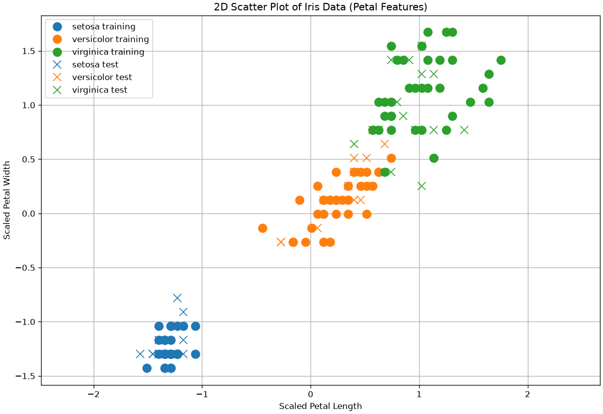
Training the KNN Model
Now we can train our model. The KNN algorithm is very simple:
- Training: The “training” step is just storing the (scaled)
X_trainandy_traindata. That’s it. - Predicting: When we get a new, unseen flower, the model calculates the distance to all points in its “memory” (the training data) and finds the k nearest ones. It then takes a “majority vote” of those k neighbors to decide the species.
The most important choice we have to make is the hyperparameter k (the number of neighbors).
- A small k (e.g., k=1) creates a “nervous” model that is very sensitive to noise. It has low bias but high variance (it overfits).
- A large k (e.g., k=50) creates a “smooth” model that ignores local patterns. It has high bias but low variance (it underfits).
We will start with a common, balanced choice: k=5.
# 1. Choose k
k = 5
# 2. Create the classifier
knn = KNeighborsClassifier(n_neighbors=k)
# 3. "Train" the model (i.e., let it memorize the scaled training data)
knn.fit(X_train_scaled, y_train)
print(f"KNN model trained with k={k}")KNN model trained with k=5Evaluating the Model
Now for the moment of truth. We will use our trained model to make predictions on the X_test_scaled data, which it has never seen before. We will then compare its predictions (y_pred) to the true labels (y_test).
We will use three key metrics:
- Accuracy: The simplest metric. What percentage of predictions did the model get right?
- Confusion Matrix: The most important diagnostic. It shows us where the model got confused.
- Classification Report: A full summary of Precision, Recall, and F1-Score for each class.
# 1. Make predictions on the test set
y_pred = knn.predict(X_test_scaled)
# 2. Calculate Accuracy
acc = accuracy_score(y_test, y_pred)
print(f"Model Accuracy (k=5): {acc * 100:.2f}%")
# 3. Calculate and print the Confusion Matrix
# Rows are the "True" class, Columns are the "Predicted" class
print("\n--- Confusion Matrix ---")
cm = confusion_matrix(y_test, y_pred)
print(cm)
# 4. Print the Classification Report
print("\n--- Classification Report ---")
report = classification_report(y_test, y_pred, target_names=iris.target_names)
print(report)Model Accuracy (k=5): 91.11%
--- Confusion Matrix ---
[[15 0 0]
[ 0 14 1]
[ 0 3 12]]
--- Classification Report ---
precision recall f1-score support
setosa 1.00 1.00 1.00 15
versicolor 0.82 0.93 0.88 15
virginica 0.92 0.80 0.86 15
accuracy 0.91 45
macro avg 0.92 0.91 0.91 45
weighted avg 0.92 0.91 0.91 45
Interpreting the Results
Let’s analyze the output:
Accuracy: We achieved a very high accuracy! This is common on the Iris dataset, especially when using the petal features.
Confusion Matrix: The matrix is the best way to see this:
[[15 0 0] <- (True: setosa) [ 0 14 1] <- (True: versicolor) [ 0 3 12]] <- (True: virginica)- The numbers on the diagonal (15, 14, 12) are our correct predictions.
- The numbers off the diagonal are our errors. 1 versicolor has been classified as virginica, while 2 virginica have been classified as versicolor.
- It correctly identified all 15
setosa, 14versicolor, and 12virginicasamples in the test set.
Classification Report:
- This confirms the perfect score. The precision (of the predictions) and recall (of the true classes) are very high for the three species.
This shows that for this dataset, a simple KNN (k=5) model using only two features is a good classifier.
Macro vs. Micro Averaging
The report gives us scores for setosa, versicolor, and virginica individually. But how do we get a single, overall score for “Precision” or “Recall”? We have to average the per-class scores. There are three main ways to do this:
- Macro Averaging
- How: Calculates the metric (e.g., Precision) for each class independently, then computes the simple, unweighted average.
- Formula:
Macro Precision = (Precision_setosa + Precision_versicolor + Precision_virginica) / 3 - What it means: Every class gets an equal vote, regardless of its size. Use this if you care about performance on rare classes.
- Weighted Averaging
- How: Calculates the metric for each class, then computes a weighted average based on the number of true samples for each class (its “support”).
- Formula:
Weighted Precision = (Prec_setosa * 15 + Prec_versicolor * 15 + Prec_virginica * 15) / (15 + 15 + 15) - What it means: Every class’s score is weighted by its size. This is a good, “fair” average for imbalanced datasets.
- Micro Averaging
- How: Sums up all individual True Positives, False Positives, and False Negatives from all classes first, then computes one global score.
- Formula:
Micro Precision = (TP_set + TP_ver + TP_vir) / (TP_set + TP_ver + TP_vir + FP_set + FP_ver + FP_vir) - What it means: Every sample gets an equal vote. In multi-class classification, this number will always be exactly the same as the overall Accuracy.
Classification Map/Decision Boundary Of K-NN and Importance of Parameter K
A classifier f assigns a class to each input \mathbf{x}. Since \mathbf{x} can be seen as a geometrical point in the n-dimensional space, it is generally interesting to see how the classification function f works on a portion of the representation space. This is done by generating a classification map or decision boundary, which is obtained computing the label that the classifier would assign to a dense grid of data points.
This is the decision boundary with K=1 in our case:
import numpy as np
from matplotlib import pyplot as plt
from sklearn import neighbors, datasets
from matplotlib.colors import ListedColormap
# Load Iris dataset
iris = datasets.load_iris()
# Use petal length and petal width (features 2 and 3)
X = iris.data[:, 2:4]
y = iris.target
# Train KNN classifier
knn = neighbors.KNeighborsClassifier(n_neighbors=1)
knn.fit(X, y)
# Create meshgrid for decision boundary
x_min, x_max = X[:, 0].min() - 0.1, X[:, 0].max() + 0.1
y_min, y_max = X[:, 1].min() - 0.1, X[:, 1].max() + 0.1
xx, yy = np.meshgrid(np.linspace(x_min, x_max, 500),
np.linspace(y_min, y_max, 500))
Z = knn.predict(np.c_[xx.ravel(), yy.ravel()])
Z = Z.reshape(xx.shape)
# Define color maps
cmap_light = ListedColormap(['#FFAAAA', '#AAFFAA', '#AAAAFF'])
cmap_bold = ListedColormap(['#FF0000', '#00DD00', '#0000FF'])
# Plot decision boundaries
plt.figure(figsize=(12, 8))
plt.contourf(xx, yy, Z, cmap=cmap_light)
# Plot training points
plt.scatter(X[y == 0, 0], X[y == 0, 1], color='#FF0000', label=iris.target_names[0])
plt.scatter(X[y == 1, 0], X[y == 1, 1], color='#00DD00', label=iris.target_names[1])
plt.scatter(X[y == 2, 0], X[y == 2, 1], color='#0000FF', label=iris.target_names[2])
# Label axes and finalize plot
plt.xlabel('Petal length (cm)')
plt.ylabel('Petal width (cm)')
plt.legend()
plt.axis('tight')
plt.title('KNN Decision Boundaries (Petal Features)')
plt.grid(True)
plt.show()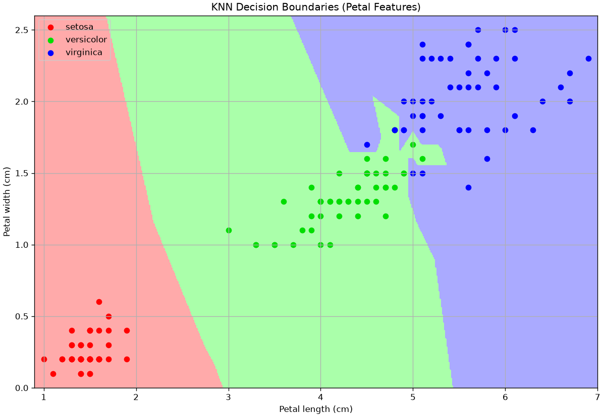
In the plot above, points of different colors represent the data points belonging to the three classes of the dataset, while regions of different colors represent how that point in space would be classified by the model.
K controls how the space is partitioned (bias-variance tradeoff).
Examples of classification maps for a 1-NN, a 5-NN, a 10-NN, and a 20-NN classifiers are shown below:
import numpy as np
import matplotlib.pyplot as plt
from sklearn import neighbors, datasets
from matplotlib.colors import ListedColormap
# Load Iris dataset
iris = datasets.load_iris()
X = iris.data[:, 2:4] # Petal length and petal width
y = iris.target
# Define color maps
cmap_light = ListedColormap(['#FFAAAA', '#AAFFAA', '#AAAAFF'])
cmap_bold = ListedColormap(['#FF0000', '#00DD00', '#0000FF'])
# Create meshgrid
x_min, x_max = X[:, 0].min() - 0.1, X[:, 0].max() + 0.1
y_min, y_max = X[:, 1].min() - 0.1, X[:, 1].max() + 0.1
xx, yy = np.meshgrid(np.linspace(x_min, x_max, 500),
np.linspace(y_min, y_max, 500))
# Loop through different k values
for k in [1, 5, 10, 20]:
knn = neighbors.KNeighborsClassifier(n_neighbors=k)
knn.fit(X, y)
Z = knn.predict(np.c_[xx.ravel(), yy.ravel()])
Z = Z.reshape(xx.shape)
plt.figure(figsize=(12, 8))
plt.pcolormesh(xx, yy, Z, cmap=cmap_light, shading='auto')
# Plot training points
plt.scatter(X[y == 0, 0], X[y == 0, 1], color='#FF0000', label=iris.target_names[0])
plt.scatter(X[y == 1, 0], X[y == 1, 1], color='#00DD00', label=iris.target_names[1])
plt.scatter(X[y == 2, 0], X[y == 2, 1], color='#0000FF', label=iris.target_names[2])
plt.xlabel('Petal length (cm)')
plt.ylabel('Petal width (cm)')
plt.title(f'K={k}')
plt.legend()
plt.axis('tight')
plt.grid(True)
plt.show()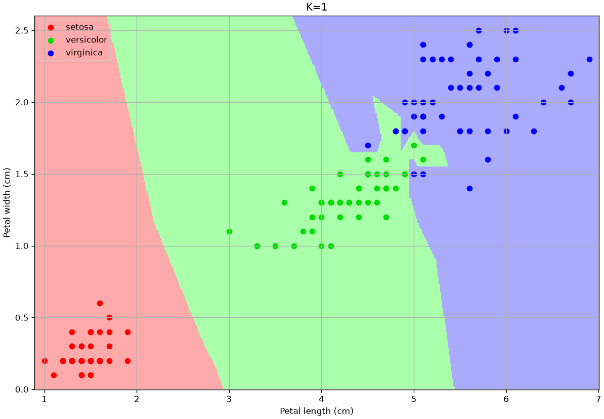
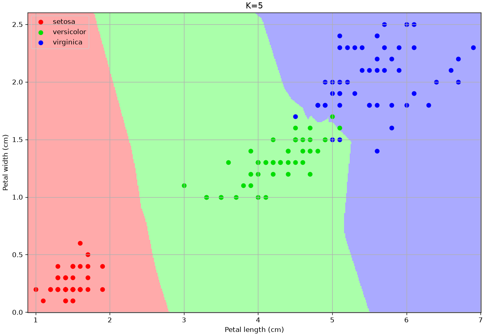
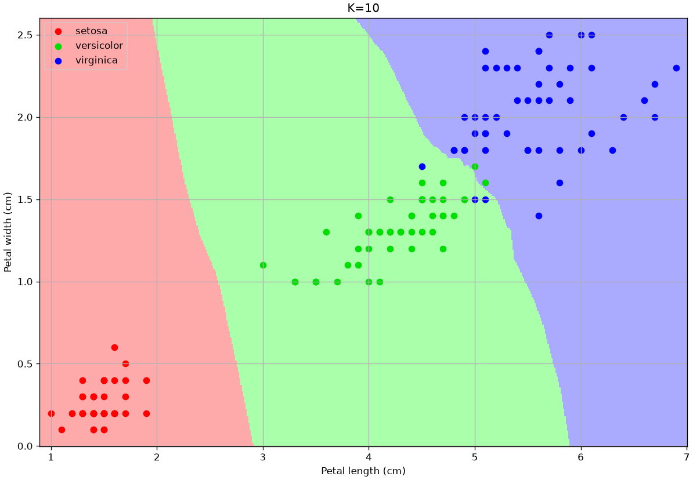
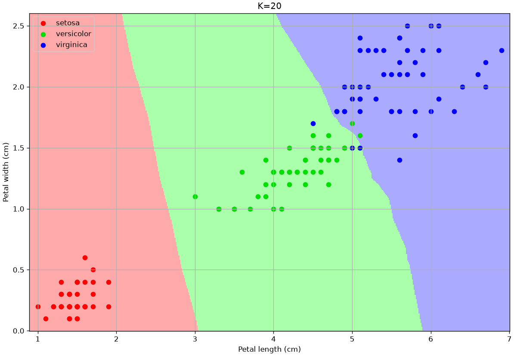
The number of neighbors changes the decision map:
For small values, the algorithm tends to over-segment the space and creates very small regions for isolated training data-points.
For larger values, the regions tend to be smoother and isolated data points are ignored.
Choosing a larger K can reduce overfitting (indeed the isolated data-points can be seen as outliers).
However, choosing a too large K can encourage underfitting, by completing ignoring some of the decision regions.
In particular, setting K to the size of the training set, any data point is classified with the most numerous class.
Finding the best K
We saw that K affects the quality of our classifier, but how to choose the appropriate one? We will see how to do it with cross-validation.
Step 1: Prepare Data
For this, we’ll use all 4 features to make the problem more robust. We’ll do a single 70/30 split and then lock the test set away.
import pandas as pd
import numpy as np
import seaborn as sns
import matplotlib.pyplot as plt
from sklearn.datasets import load_iris
from sklearn.model_selection import train_test_split, cross_val_score
from sklearn.preprocessing import StandardScaler
from sklearn.neighbors import KNeighborsClassifier
from sklearn.metrics import accuracy_score, classification_report
# 1. Load data
iris = load_iris()
X = iris.data
y = iris.target
# 2. Create the one-and-only Train/Test Split
# We'll call it X_train_full, y_train_full to be clear
X_train_full, X_test, y_train_full, y_test = train_test_split(X, y, test_size=0.3, random_state=42, stratify=y)
# 3. Scale the data
# We fit the scaler ONLY on the full training set
scaler = StandardScaler()
X_train_scaled = scaler.fit_transform(X_train_full)
# We transform the test set using the *same* scaler
X_test_scaled = scaler.transform(X_test)Step 2: Run Cross-Validation to Find Best K
Now we loop through our K values (e.g., 1 to 20). For each K, we will use cross_val_score to automatically perform 5-fold cross-validation only on the training data.
# 1. Define a range of K values to test
k_range = range(1, 21)
cv_scores = [] # This will store the *mean* accuracy for each k
# 2. Loop through each K
for k in k_range:
# Create a new KNN model for this k
knn = KNeighborsClassifier(n_neighbors=k)
# Perform 5-fold cross-validation
# We use X_train_scaled and y_train_full
# 'cv=5' means 5 folds
# 'scoring='accuracy'' is the metric we want
scores = cross_val_score(knn, X_train_scaled, y_train_full, cv=5, scoring='accuracy')
# Store the average accuracy from the 5 folds
cv_scores.append(scores.mean())
# 3. Plot the Validation Curve
plt.figure(figsize=(10, 6))
plt.plot(k_range, cv_scores, 'o-')
plt.title('KNN Validation Curve (5-Fold Cross-Validation)')
plt.xlabel('K (Number of Neighbors)')
plt.ylabel('Mean CV Accuracy')
plt.xticks(k_range)
# Find and mark the best K
best_k_index = np.argmax(cv_scores)
best_k = k_range[best_k_index]
best_acc = cv_scores[best_k_index]
plt.axvline(best_k, linestyle='--', color='red', label=f'Best K = {best_k} (Avg. Acc = {best_acc:.2f})')
plt.legend()
plt.grid(True, linestyle='--', alpha=0.6)
plt.show()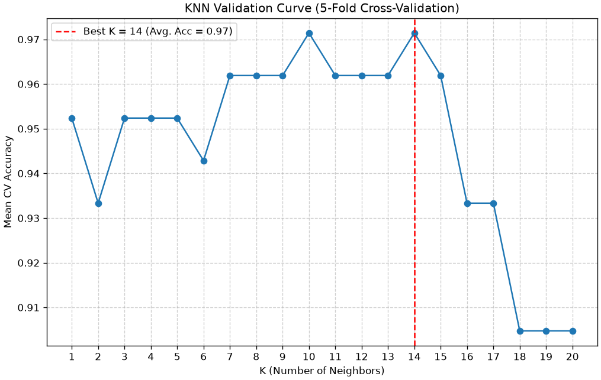
Step 3: Final Training and Evaluation
The plot shows us the bias-variance tradeoff.
- Low K (left): The accuracy is jumpy and lower. The model is overfitting to the folds (High Variance).
- High K (right): The accuracy starts to drop as the model becomes too “simple” (High Bias).
- The Peak: Our plot shows the “sweet spot” is around K=10 or K=14. This is our chosen hyperparameter.
Now, we perform our final two steps.
# 1. Get the best K we found from our CV
best_k = k_range[np.argmax(cv_scores)]
print(f"Cross-validation complete. The best K is {best_k}.")
# 2. Train a *new* model on the *ENTIRE* training set
final_knn_model = KNeighborsClassifier(n_neighbors=best_k)
final_knn_model.fit(X_train_scaled, y_train_full)
# 3. Finally, use the "locked away" Test Set
# This is our one and only time.
final_predictions = final_knn_model.predict(X_test_scaled)
# 4. Report the final, unbiased score
final_accuracy = accuracy_score(y_test, final_predictions)
print(f"\n--- Final Model Evaluation ---")
print(f"Final Test Set Accuracy (with K={best_k}): {final_accuracy * 100:.2f}%")
print("\n--- Final Classification Report ---")
print(classification_report(y_test, final_predictions, target_names=iris.target_names))Cross-validation complete. The best K is 14.
--- Final Model Evaluation ---
Final Test Set Accuracy (with K=14): 95.56%
--- Final Classification Report ---
precision recall f1-score support
setosa 1.00 1.00 1.00 15
versicolor 0.88 1.00 0.94 15
virginica 1.00 0.87 0.93 15
accuracy 0.96 45
macro avg 0.96 0.96 0.96 45
weighted avg 0.96 0.96 0.96 45
Conclusion
This is the principled, robust machine learning workflow.
- We split our data once.
- We used the training data and cross-validation to find the best hyperparameter (K).
- We trained a single, final model on all the training data.
- We reported a final, honest accuracy by testing on the test data.
The final classification report gives us the unbiased performance of our tuned model.
K-Nearest Neighbors (KNN) for Regression
We’ve seen how KNN works for Classification (predicting a label) by taking a “majority vote” of the nearest neighbors.
The algorithm is extremely flexible and can also be used for Regression (predicting a continuous value). The logic is identical, with one small change in the final step:
- KNN Classifier (Iris): Find the k nearest flowers \to Predict the most common species (the mode) of the neighbors.
- KNN Regressor (MPG): Find the k nearest cars \to Predict the average
mpg(the mean) of the neighbors.
Let’s use our mpg dataset to build a KNeighborsRegressor that predicts mpg using horsepower.
import pandas as pd
import numpy as np
import seaborn as sns
import matplotlib.pyplot as plt
# Import the Regressor and other tools
from sklearn.model_selection import train_test_split, cross_val_score
from sklearn.preprocessing import StandardScaler
from sklearn.neighbors import KNeighborsRegressor
from sklearn.metrics import mean_squared_error
# Load and clean the data
mpg = sns.load_dataset('mpg').dropna()
# 1. Define our features (X) and target (y)
# We use .values.reshape(-1, 1) to turn the pandas Series into a 2D numpy array
X = mpg[['horsepower']].values
y = mpg['mpg'].values
# 2. Create the Train/Test Split
X_train, X_test, y_train, y_test = train_test_split(X, y, test_size=0.3, random_state=42)
# 3. Scale the Features (CRITICAL for KNN)
# KNN is distance-based, so scaling is not optional.
scaler = StandardScaler()
X_train_scaled = scaler.fit_transform(X_train)
X_test_scaled = scaler.transform(X_test)Visualizing the Bias-Variance Tradeoff (Overfit vs. Underfit)
Just like in classification, the choice of k controls the bias-variance tradeoff. Let’s build two models to see this:
- A k=3 model (Low Bias, High Variance): This model will be “nervous” and “wiggly,” as it only looks at its 3 closest neighbors. It will overfit to the training data.
- A k=50 model (High Bias, Low Variance): This model will be very “smooth” and “simple,” as it averages the opinions of 50 neighbors. It will be stable but will underfit, missing the local patterns.
# 1. Create the two models (using 'uniform' weights)
knn_overfit = KNeighborsRegressor(n_neighbors=3, weights='uniform')
knn_underfit = KNeighborsRegressor(n_neighbors=50, weights='uniform')
# 2. Fit both models on the scaled training data
knn_overfit.fit(X_train_scaled, y_train)
knn_underfit.fit(X_train_scaled, y_train)
# 3. Create a smooth line of x-values for plotting
X_plot = np.linspace(X_train_scaled.min(), X_train_scaled.max(), 200).reshape(-1, 1)
# 4. Get the predictions from both models
y_pred_overfit = knn_overfit.predict(X_plot)
y_pred_underfit = knn_underfit.predict(X_plot)
# 5. Plot the results
plt.figure(figsize=(12, 7))
plt.scatter(X_train_scaled, y_train, c='blue', alpha=0.2, label='Training Data')
plt.scatter(X_test_scaled, y_test, c='orange', alpha=0.8, label='Test Data')
plt.plot(X_plot, y_pred_overfit, 'r-', lw=3, label='Prediction (k=3, High Variance)')
plt.plot(X_plot, y_pred_underfit, 'g-', lw=3, label='Prediction (k=50, High Bias)')
plt.title('KNN Regression: The Effect of K')
plt.xlabel('Scaled Horsepower')
plt.ylabel('MPG')
plt.legend()
plt.grid(True, linestyle='--', alpha=0.5)
plt.show()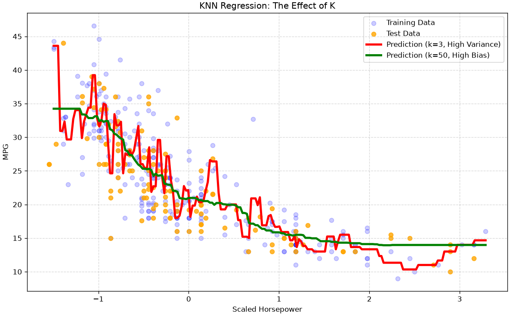
Interpretation of the Plot
You can clearly see the bias-variance tradeoff in action:
- The red line (k=3) is “spiky” and “nervous.” It tries to follow the training data (blue dots) too closely. This is overfitting (High Variance).
- The green line (k=50) is very smooth, acting almost like a simple average. It misses the clear non-linear curve in the data. This is underfitting (High Bias).
Our goal is to find the “sweet spot” k in the middle.
Finding the Optimal K with Cross-Validation
Just like in our classification example, we can use K-Fold Cross-Validation on the training set to find the best k.
The only difference is our scoring metric. Instead of accuracy, we use neg_mean_squared_error (scikit-learn uses negative MSE because its internal optimizer always tries to maximize a score).
# 1. Define a range of K values to test
k_range = range(1, 41)
cv_scores = [] # This will store the *mean* RMSE for each k
# 2. Loop through each K
for k in k_range:
knn = KNeighborsRegressor(n_neighbors=k, weights='uniform')
# Perform 5-fold cross-validation on the training data
# We ask for 'neg_mean_squared_error'
scores = cross_val_score(knn, X_train_scaled, y_train, cv=5, scoring='neg_mean_squared_error')
# We store the *positive* *root* of the MSE
cv_scores.append(np.sqrt(-scores.mean()))
# 3. Plot the Validation "Elbow" Curve
plt.figure(figsize=(10, 6))
plt.plot(k_range, cv_scores, 'o-')
plt.title('KNN Regression: Validation Curve (Elbow Plot)')
plt.xlabel('K (Number of Neighbors)')
plt.ylabel('Average CV RMSE') # Lower is better!
plt.xticks(np.arange(0, 41, 5))
# Find and mark the best K (lowest RMSE)
best_k_index = np.argmin(cv_scores)
best_k = k_range[best_k_index]
best_rmse = cv_scores[best_k_index]
plt.axvline(best_k, linestyle='--', color='red', label=f'Best K = {best_k} (Avg. RMSE = {best_rmse:.2f})')
plt.legend()
plt.grid(True, linestyle='--', alpha=0.6)
plt.show()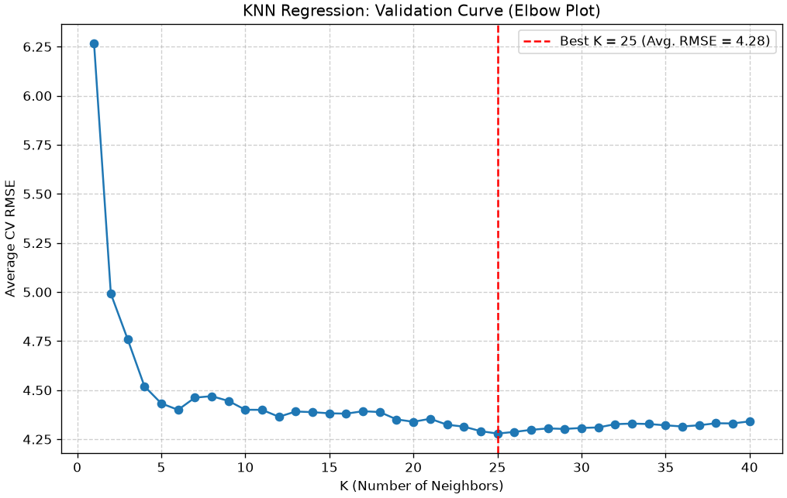
Final Evaluation
The validation plot shows us that the “sweet spot” (lowest error) is at k=25.
Now we can train our final, optimized model on the entire training set and get our final, unbiased score from the test set.
# 1. Train the *final* model with the best K
final_knn_regressor = KNeighborsRegressor(n_neighbors=best_k, weights='uniform')
final_knn_regressor.fit(X_train_scaled, y_train)
# 2. Get final predictions on the (held-out) test set
final_predictions = final_knn_regressor.predict(X_test_scaled)
# 3. Calculate the final, honest RMSE
final_rmse = np.sqrt(mean_squared_error(y_test, final_predictions))
print(f"--- Final Model Evaluation ---")
print(f"The best K found by CV: {best_k}")
print(f"Final Test Set RMSE: {final_rmse:.4f} (mpg)")--- Final Model Evaluation ---
The best K found by CV: 25
Final Test Set RMSE: 4.2943 (mpg)From Binary to Multi-Class: One-vs-Rest (OvR)
One-vs-Rest provides a technique to turn any binary classification model into a multi-class model. This is also known as “one vs all”.
The OvR approach turns one K-class problem into K separate binary classification problems. To do this, we need a binary classifier (like Logistic Regression) that outputs a confidence score (a probability), which we can use to find the most likely class.
Given a classification task with K classes, the OvR approach works as follows:
- Deconstruct the Problem: We train K independent binary classifiers, h_k. Each classifier is trained to distinguish one class from all other classes (the “rest”).
- Classifier 1 (h_1): Trains on
Class 1vs.(Class 2 + Class 3 + ... + Class K) - Classifier 2 (h_2): Trains on
Class 2vs.(Class 1 + Class 3 + ... + Class K) - …
- Classifier K (h_K): Trains on
Class Kvs.(Class 1 + Class 2 + ... + Class K-1)
- Classifier 1 (h_1): Trains on
- Classify a New Point: To classify a new example \mathbf{x}, we feed it to all K classifiers. Each one will output a probability or confidence score:
- h_1(\mathbf{x}) \to P(y=1 | \mathbf{x})
- h_2(\mathbf{x}) \to P(y=2 | \mathbf{x})
- h_3(\mathbf{x}) \to P(y=3 | \mathbf{x})
- Choose the Winner: The final predicted class is simply the one whose classifier gave the highest confidence score.
This is exemplified in the figure below, on three classes: the first three panels are the binary problems each classifier solves, the fourth is the resulting decision.
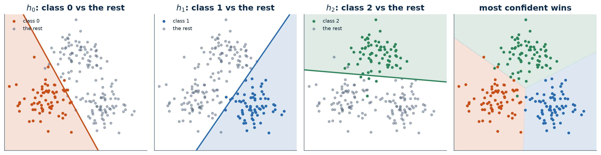
This OvR strategy is a convenient “wrapper” that lets us use a simple binary model for a multi-class task. The alternative is to fit multinomial logistic regression directly, as in chapter 10: one model that handles all K classes at once, and normalises across them from the start rather than arbitrating between separate classifiers afterwards. The lab below compares the two.
Multiclass Logistic Regression in Python (Machine Learning Perspective)
In chapters 9 and 10 we used statsmodels to build logistic regression models for inference and understanding. We focused on interpreting p-values and coefficients (log-odds).
Now, we will switch to the Machine Learning perspective. Our goal is no longer understanding but predictive accuracy.
We will use scikit-learn to build robust, optimized models. Our new workflow will be:
- Start with a Train/Test Split to get an honest, unbiased evaluation.
- Build a
Pipelinethat includesStandardScaler, as logistic regression is sensitive to feature scales (especially when regularized). - Use
GridSearchCVto find the best hyperparameters (specifically the regularization strengthC). - Evaluate our final, tuned model on the test set using metrics like
accuracy,classification_report, and theconfusion_matrix.
Part 1: Binary Logistic Regression
We will use the Breast Cancer Wisconsin dataset, which is a classic binary classification problem: predict whether a tumor is malignant (1) or benign (0) based on 30 continuous features.
import pandas as pd
import numpy as np
import matplotlib.pyplot as plt
import seaborn as sns
# Load the dataset
from sklearn.datasets import load_breast_cancer
# All our models and tools
from sklearn.model_selection import train_test_split, GridSearchCV
from sklearn.preprocessing import StandardScaler
from sklearn.linear_model import LogisticRegression
from sklearn.pipeline import Pipeline
from sklearn.metrics import accuracy_score, confusion_matrix, classification_report
# 1. Load Data
data = load_breast_cancer()
X = data.data
y = data.target
target_names = data.target_names
print(f"Features shape: {X.shape}")
print(f"Target shape: {y.shape}")
print(f"Classes: 0 = {target_names[0]}, 1 = {target_names[1]}")
# 2. Create the Train/Test Split
# We hold back 30% for the final test
X_train, X_test, y_train, y_test = train_test_split(X, y, test_size=0.3, random_state=42, stratify=y)Features shape: (569, 30)
Target shape: (569,)
Classes: 0 = malignant, 1 = benignBuilding the Pipeline and Hyperparameter Grid
We will create a Pipeline that first scales the data, then fits the logistic regression model.
Note that the LogisticRegression is regularized with L2 norm by default with a parameter C.
Cis the inverse of the regularization strength \lambda we saw in theory.- Small
C= Strong regularization (simpler model, high bias). - Large
C= Weak regularization (complex model, high variance).
We will use GridSearchCV to find the best value for C.
# 1. Create the pipeline
pipe_lr = Pipeline([
('scaler', StandardScaler()),
('model', LogisticRegression(solver='liblinear')) # 'liblinear' is a good solver for binary
])
# 2. Define a search grid for 'C'
# We'll test a wide range of C values on a log scale
param_grid_lr = {
'model__C': np.logspace(-3, 3, 7) # [0.001, 0.01, 0.1, 1, 10, 100, 1000]
}
# 3. Create and fit the Grid Search
# cv=5 means 5-fold cross-validation on the training set
print("Starting Grid Search for Binary Logistic Regression...")
search_lr = GridSearchCV(pipe_lr, param_grid_lr, cv=5, scoring='accuracy')
search_lr.fit(X_train, y_train)
print("Grid Search complete.")
print(f"Best 'C' found by CV: {search_lr.best_params_['model__C']}")
print(f"Best CV accuracy: {search_lr.best_score_:.4f}")Starting Grid Search for Binary Logistic Regression...
Grid Search complete.
Best 'C' found by CV: 1.0
Best CV accuracy: 0.9799Final Evaluation (Binary)
The GridSearchCV has automatically found the best C and re-trained a final model on the entire training set (available as search_lr.best_estimator_).
Now we “unlock” our test set for the first and only time to get our final, unbiased score.
# 1. Get predictions from the best-tuned model
y_pred = search_lr.predict(X_test)
# 2. Calculate final metrics
accuracy = accuracy_score(y_test, y_pred)
print(f"--- Final Model Evaluation (Test Set) ---")
print(f"Overall Accuracy: {accuracy * 100:.2f}%")
print("\n--- Confusion Matrix ---")
cm = confusion_matrix(y_test, y_pred)
sns.heatmap(cm, annot=True, fmt='d', cmap='Blues',
xticklabels=target_names,
yticklabels=target_names)
plt.xlabel('Predicted')
plt.ylabel('True')
plt.show()
print("\n--- Classification Report ---")
print(classification_report(y_test, y_pred, target_names=target_names))--- Final Model Evaluation (Test Set) ---
Overall Accuracy: 98.83%
--- Confusion Matrix ---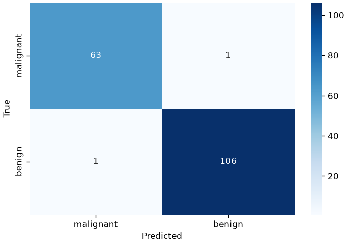
--- Classification Report ---
precision recall f1-score support
malignant 0.98 0.98 0.98 64
benign 0.99 0.99 0.99 107
accuracy 0.99 171
macro avg 0.99 0.99 0.99 171
weighted avg 0.99 0.99 0.99 171
Part 2: Multi-Class Logistic Regression
What happens when we have more than two classes, like in the Iris dataset (3 classes)? A binary model that predicts P(y=1) can’t work.
We have two main strategies:
- One-vs-Rest (OvR):
- How it works: This strategy trains K separate binary classifiers.
- Classifier 1:
setosavs. (versicolor+virginica) - Classifier 2:
versicolorvs. (setosa+virginica) - Classifier 3:
virginicavs. (setosa+versicolor)
- Classifier 1:
- When a new flower comes in, all 3 classifiers give a probability. The one with the highest confidence wins.
- This is the default strategy in
sklearn.
- How it works: This strategy trains K separate binary classifiers.
- Multinomial logistic regression:
- How it works: the model of chapter 10, fitted as a single unit over all K classes rather than as K separate problems.
- It outputs a vector of probabilities, one per class, guaranteed to sum to 1.
- e.g.,
[P(setosa)=0.9, P(versicolor)=0.05, P(virginica)=0.05]
- e.g.,
scikit-learnfits it in the softmax parametrisation;statsmodelsin the baseline one. Same model, and nothing here depends on which.
Let’s use the Iris dataset and compare both strategies in a “bake-off”.
from sklearn.datasets import load_iris
from sklearn.multiclass import OneVsRestClassifier # <-- Import the OvR wrapper
# 1. Load Iris data (using all 4 features)
iris = load_iris()
X_i = iris.data
y_i = iris.target
target_names_i = iris.target_names
# 2. Create the Train/Test Split
X_train_i, X_test_i, y_train_i, y_test_i = train_test_split(X_i, y_i, test_size=0.3, random_state=42, stratify=y_i)
# 3. Define the parameter grid (we'll use this for both)
param_grid = {
'C': np.logspace(-3, 3, 7) # [0.001, 0.01, 0.1, 1, 10, 100, 1000]
}Model 1: Multinomial logistic regression
This is the standard for multi-class logistic regression in sklearn — the softmax parametrisation of the model of chapter 10. We build a pipeline and tune the C parameter of the LogisticRegression model.
# 1. Create the pipeline for the multinomial model
pipe_multi = Pipeline([
('scaler', StandardScaler()),
('model', LogisticRegression(solver='lbfgs', max_iter=200))
])
# 2. Define the grid search parameters
# We must prefix parameters with the pipeline step name: 'model__'
param_grid_multi = {
'model__C': np.logspace(-3, 3, 7)
}
# 3. Run Grid Search
print("Running Grid Search for the multinomial model...")
search_multi = GridSearchCV(pipe_multi, param_grid_multi, cv=5, scoring='accuracy')
search_multi.fit(X_train_i, y_train_i)
print(f"Best 'C' for Multinomial: {search_multi.best_params_['model__C']}")
print(f"Best CV Accuracy: {search_multi.best_score_:.4f}")Running Grid Search for the multinomial model...
Best 'C' for Multinomial: 1.0
Best CV Accuracy: 0.9810Model 2: One-vs-Rest (OvR)
Now we’ll use the OneVsRestClassifier wrapper. This wrapper takes a base estimator (our binary LogisticRegression model) and will train 3 of them “under the hood.”
Important: Because our model is now a wrapper, the hyperparameter C belongs to the base estimator, not the wrapper. When we build our GridSearchCV, the parameter name changes to model__estimator__C.
# 1. Create the pipeline for OvR
# We pass a *new* LogisticRegression() model *inside* the wrapper
pipe_ovr = Pipeline([
('scaler', StandardScaler()),
('model', OneVsRestClassifier(LogisticRegression(solver='liblinear')))
])
# 2. Define the grid search parameters
# Note the new parameter name: 'model__estimator__C'
param_grid_ovr = {
'model__estimator__C': np.logspace(-3, 3, 7)
}
# 3. Run Grid Search
print("\nRunning Grid Search for One-vs-Rest (OvR)...")
search_ovr = GridSearchCV(pipe_ovr, param_grid_ovr, cv=5, scoring='accuracy')
search_ovr.fit(X_train_i, y_train_i)
print(f"Best 'C' for OvR: {search_ovr.best_params_['model__estimator__C']}")
print(f"Best CV Accuracy: {search_ovr.best_score_:.4f}")
Running Grid Search for One-vs-Rest (OvR)...
Best 'C' for OvR: 10.0
Best CV Accuracy: 0.9714Final Comparison: multinomial against one-vs-rest
Now we do our final, unbiased evaluation on the test set.
# 1. Get predictions from the best multinomial model
y_pred_multi = search_multi.predict(X_test_i)
acc_multi = accuracy_score(y_test_i, y_pred_multi)
# 2. Get predictions from the best OvR model
y_pred_ovr = search_ovr.predict(X_test_i)
acc_ovr = accuracy_score(y_test_i, y_pred_ovr)
# 3. Create a results table
results = {
"Multinomial": acc_multi,
"One-vs-Rest (OvR)": acc_ovr
}
results_df = pd.DataFrame.from_dict(results, orient='index', columns=['Test Accuracy'])
print("\n--- Multi-Class Model Comparison ---")
print(results_df.sort_values(by='Test Accuracy', ascending=False))
print("\n--- Report for the Multinomial Model ---")
print(classification_report(y_test_i, y_pred_multi, target_names=target_names_i))
print("\n--- Report for One-vs-Rest (OvR) Model ---")
print(classification_report(y_test_i, y_pred_ovr, target_names=target_names_i))
--- Multi-Class Model Comparison ---
Test Accuracy
Multinomial 0.911111
One-vs-Rest (OvR) 0.866667
--- Report for the Multinomial Model ---
precision recall f1-score support
setosa 1.00 1.00 1.00 15
versicolor 0.82 0.93 0.88 15
virginica 0.92 0.80 0.86 15
accuracy 0.91 45
macro avg 0.92 0.91 0.91 45
weighted avg 0.92 0.91 0.91 45
--- Report for One-vs-Rest (OvR) Model ---
precision recall f1-score support
setosa 1.00 1.00 1.00 15
versicolor 0.80 0.80 0.80 15
virginica 0.80 0.80 0.80 15
accuracy 0.87 45
macro avg 0.87 0.87 0.87 45
weighted avg 0.87 0.87 0.87 45
Exercises
- Beyond accuracy. On an imbalanced problem, build a classifier that achieves high accuracy and is useless. Report its precision, recall and confusion matrix, and say which metric you would put in a report and why.
- Threshold. Take a logistic regression and vary the decision threshold from 0 to 1. Plot precision and recall against the threshold. Choose a threshold for (a) a spam filter and (b) a screening test, and justify each choice in terms of the cost of each error.
- Choosing K. Cross-validate KNN for K from 1 to 50. Plot the curve. Explain the behaviour at both ends in terms of the bias-variance tradeoff.
- Scaling and distance. Run KNN with and without standardising the features on a dataset whose variables have very different units. Explain the difference in terms of how the distance is computed.
- Multinomial against one-vs-rest. Fit both to a three-class problem. Compare the cross-validated scores and the number of parameters. Are the predictions identical? Where do they disagree?
References
- Evaluation Measures for Classifcation: https://en.wikipedia.org/wiki/Precision_and_recall
- Nearest Neighbor: Section 2.5.2 of [1]
[1] Bishop, Christopher M. Pattern recognition and machine learning. springer, 2006. https://www.microsoft.com/en-us/research/uploads/prod/2006/01/Bishop-Pattern-Recognition-and-Machine-Learning-2006.pdf